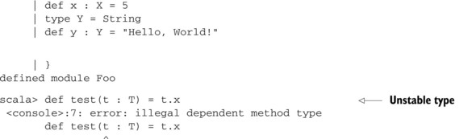

{% include JB/setup %}
{% raw %}
<div>

<div class="calibre5"></div><h2 class="chapter" id="ch06">Chapter 6. <a id="ch06__title" class="calibre6"></a>The Type System
      </h2>
      <p class="calibre2"> </p><table cellspacing="5" width="100%" border="1" class="calibre10"><colgroup class="calibre19"><col width="550" class="calibre12"/></colgroup><tbody class="calibre13"><tr class="calibre14"><td class="calibre20"/>
            </tr></tbody></table><div class="calibre4">
         
         <b id="ch06sb01" class="calibre21">In this chapter</b>
         
         <p class="calibre22"></p>
         <ul class="calibre23"><li class="calibre24">Structural types</li>
            
            <li class="calibre24">Using type constraints</li>
            
            <li class="calibre24">Type parameters and higher-kinded types</li>
            
            <li class="calibre24">Existential types</li>
            
         </ul></div>
      <table cellspacing="5" width="100%" border="1" class="calibre10"><colgroup class="calibre19"><col width="550" class="calibre12"/></colgroup><tbody class="calibre13"><tr class="calibre14"><td class="calibre20"/>
            </tr></tbody></table><p class="calibre2"> </p><p class="noind">The type system is an important component of the Scala language. It enables lots of rich optimizations and constraints to
         be used during compilation, which helps runtime speed and prevents programming errors. The type system allows us to create
         all sorts of interesting walls around ourselves, known as types. These walls help prevent us from accidentally writing improper
         code. This is done through the compiler tracking information about variables, methods, and classes. The more you know about
         Scala’s type system, the more information you can give the compiler, and the type walls become less restrictive while still
         providing the same protection.
      </p>
      
      <p class="noind">When using a type system, it’s best to think of it as an overprotective father. It will constantly warn you of problems or
         prevent you from doing things altogether. The better you communicate with the type system, the less restrictive it becomes.
         But if you attempt to do something deemed inappropriate, the compiler will warn <a id="iddle1967" class="calibre25"></a>you. The compiler can be a great means of detecting errors if you give it enough information.
      </p>
      
      <p class="noind">In his book <i class="calibre9">Imperfect C++</i>, Matthew Wilson uses an analogy of comparing the compiler to a batman. This batman isn’t a caped crusader but is instead
         a good friend who offers advice and supports the programmer. In this chapter, you’ll learn the basics of the type system so
         you can begin to rely on it to catch common programming errors. The next chapter will cover more advanced type system concepts,
         as well as utilizing implicits with the type system.
      </p>
      
      <p class="noind">This chapter will cover the basics of the type system, touching on definitions and theory. The next chapter covers more practical
         applications of the type system and the best practices to use when defining constraints. Feel free to skip this information
         if you’re already comfortable with Scala’s type system.
      </p>
      
      <p class="noind">Understanding Scala’s type system begins in first understanding what a type is and how to create it.</p>
      
      
      <h3 id="ch06lev1sec1" class="calibre17"><a id="ch06lev1sec1__title" class="calibre6"></a>6.1. Types
      </h3>
      
      <p class="noind">A type is a set of information the compiler knows. This could be anything from “what class was used to instantiate this variable”
         to “what collection of methods are known to exist on this variable.” The user can explicitly provide this information, or
         the compiler can infer it through inspection of other code. When passing or manipulating variables, this information can be
         expanded or reduced, depending on how you’ve written your methods. To begin, let’s look at how types are defined in Scala.
      </p>
      <p class="calibre2"> </p><table cellspacing="5" width="100%" border="1" class="calibre10"><colgroup class="calibre19"><col width="550" class="calibre12"/></colgroup><tbody class="calibre13"><tr class="calibre14"><td class="calibre20"/>
            </tr></tbody></table><h5 class="notetitle" id="ch06note01">What is a Type?</h5>
      
      
      <p class="noindclose">A good example is the <kbd class="calibre18">String</kbd> type. This type includes a method <kbd class="calibre18">substring</kbd>, among other methods. If the user called a <kbd class="calibre18">substring</kbd> on a variable of type <kbd class="calibre18">String</kbd> the compiler would allow the call, because it knows that it would succeed at runtime (move above when passing or manipulating
         variables).
      </p>
      
      <table cellspacing="5" width="100%" border="1" class="calibre10"><colgroup class="calibre19"><col width="550" class="calibre12"/></colgroup><tbody class="calibre13"><tr class="calibre14"><td class="calibre20"/>
            </tr></tbody></table><p class="calibre2"> </p><p class="noind">In Scala, types can be defined in two ways:</p>
      
      <p class="calibre22"></p>
      <ul class="calibre23"><li class="calibre24">Defining a class, trait or object.</li>
         
         <li class="calibre24">Directly defining a type using the <kbd class="calibre18">type</kbd> keyword.
         </li>
         
      </ul><p class="noind">Defining a class, trait, or object automatically creates an associated type for the class, trait, or object. This type can
         be referred to using the same name as the class or trait. For objects we refer to the type slightly differently due to the
         potential of classes or traits having the same name as an object. Let’s look at defining a few types and referring to them
         in method arguments:
      </p>
      
      <h5 class="notetitle" id="ch06list1">Listing 6.1. <a id="ch06list1__title" class="calibre25"></a>Defining types from class, trait, or object keywords
      </h5>
      <p class="center1"></p>
      <p class="center1"></p>
      
      <p class="noind"><a id="iddle1122" class="calibre25"></a><a id="iddle1757" class="calibre25"></a><a id="iddle1765" class="calibre25"></a><a id="iddle1871" class="calibre25"></a><a id="iddle2078" class="calibre25"></a><a id="iddle2093" class="calibre25"></a>As seen in the example, class and trait names can be referenced directly when annotating types within Scala. When referring
         to an object’s type, you need to use the <kbd class="calibre18">type</kbd> member of the object. This syntax isn’t normally seen in Scala, because if you know an object’s type, you can just as easily
         access the object directly, rather than ask for it in a parameter.
      </p>
      <p class="calibre2"> </p><table cellspacing="5" width="100%" border="1" class="calibre10"><colgroup class="calibre19"><col width="550" class="calibre12"/></colgroup><tbody class="calibre13"><tr class="calibre14"><td class="calibre20"/>
            </tr></tbody></table><div class="calibre4">
         
         <b id="ch06sb02" class="calibre21">Using objects as parameters</b>
         
         <p class="noind">Using objects as parameters can greatly help when defining domain specific languages, as you can embed words as objects that
            become parameters. For example, we could define a simulation DSL as follows:
         </p>
         
         <pre id="PLd0e12817" class="calibre8">object Now
object simulate {
 def once(behavior : () =&gt; Unit) = new {
 def right(now : Now.type) : Unit = ...
 }
}
simulate once { () =&gt; someAction() } right Now</pre>
         
         </div>
      <table cellspacing="5" width="100%" border="1" class="calibre10"><colgroup class="calibre19"><col width="550" class="calibre12"/></colgroup><tbody class="calibre13"><tr class="calibre14"><td class="calibre20"/>
            </tr></tbody></table><p class="calibre2"> </p><h4 id="ch06lev2sec1" class="calibre28">6.1.1. <a id="ch06lev2sec1__title" class="calibre25"></a>Types and paths
      </h4>
      
      <p class="noind">Types within Scala are referenced relative to a binding or path. As discussed in <a href="kindle_split_013.html#ch05" class="calibre7">chapter 5</a>, a binding is the name used to refer to an entity. This name could be imported from another scope. A path isn’t a type; it’s
         a location of sorts where the compiler can find types. A path could be one of the following:
      </p>
      
      <p class="calibre22"></p>
      <ul class="calibre23"><li class="calibre24">An empty path. When a type name is used directly, there’s an implicit empty path preceding it.</li>
         
         <li class="calibre24">The path <kbd class="calibre18">C.this</kbd> where <kbd class="calibre18">C</kbd> refers to a class. Using the <kbd class="calibre18">this</kbd> keyword directly in a class <kbd class="calibre18">C</kbd> is shorthand for the full path <kbd class="calibre18">C.this</kbd>. This path type is useful for referring to identifiers defined on outer classes.
         </li>
         
         <li class="calibre24">The path <kbd class="calibre18">p.x</kbd> where <kbd class="calibre18">p</kbd> is a path and <kbd class="calibre18">x</kbd> is a stable identifier of <kbd class="calibre18">x</kbd>. A stable identifier is an identifier that the compiler knows for certain will always be accessible from the path <kbd class="calibre18">p</kbd>. For example, the path <kbd class="calibre18">scala.Option</kbd> refers to the <kbd class="calibre18">Option</kbd> singleton defined on the package <kbd class="calibre18">scala</kbd>. It’s always known to exist. The formal definition of stable members are packages, objects, or value definitions introduced
            on nonvolatile types. A volatile type is a type where the compiler can’t be certain its members won’t change. An example would
            be an abstract type <a id="iddle1136" class="calibre25"></a><a id="iddle2088" class="calibre25"></a><a id="iddle2092" class="calibre25"></a>definition on an abstract class. The type definition could change depending on the subclass and the compiler doesn’t have
            enough information to compute a stable identifier from this volatile type.
         </li>
         
         <li class="calibre24">The path <kbd class="calibre18">C.super</kbd> or <kbd class="calibre18">C.super[P]</kbd> where <kbd class="calibre18">C</kbd> refers to a class and <kbd class="calibre18">P</kbd> refers to a parent type of class <kbd class="calibre18">C</kbd>. Using the <kbd class="calibre18">super</kbd> keyword directly is shorthand for <kbd class="calibre18">C.super</kbd>. Use this path to disambiguate between identifiers defined on a class and a parent class.
         </li>
         
      </ul><p class="noind">Types within Scala are referred to via two mechanisms: the hash (<kbd class="calibre18">#</kbd>) and dot (<kbd class="calibre18">.</kbd>) operators. The dot operator can be thought of doing the same for types as it does for members of an object. It refers to
         a type found on a specific object instance. This is known as a path-dependent type. When a method is defined using the dot
         operator to a particular type, that type is bound to a specific instance of the object. This means that you can’t use a type
         from a different object, of the same class, to satisfy any type constraints made using the dot operator. The best way to think
         of this is that there’s a path of specific object instances connected by the dot operator. For a variable to match your type,
         it must follow the same object instance path. You can see an example of this later.
      </p>
      
      <p class="noind">The hash operator (<kbd class="calibre18">#</kbd>) is a looser restriction than the dot operator. It’s known as a type projection, which is a means of referring to a nested
         type without requiring a path of object instances. This means that you can reference a nested type as if it weren’t nested.
         You can see an example usage later.
      </p>
      
      <h5 class="notetitle" id="ch06list2">Listing 6.2. <a id="ch06list2__title" class="calibre25"></a>Path-dependent types and type projection examples
      </h5>
      <p class="center1"></p>
      <p class="center1"></p>
      
      <p class="noind"><a id="iddle1113" class="calibre25"></a><a id="iddle1366" class="calibre25"></a><a id="iddle1367" class="calibre25"></a><a id="iddle1527" class="calibre25"></a><a id="iddle1744" class="calibre25"></a><a id="iddle1766" class="calibre25"></a><a id="iddle1879" class="calibre25"></a><a id="iddle1880" class="calibre25"></a><a id="iddle1968" class="calibre25"></a><a id="iddle2067" class="calibre25"></a><a id="iddle2076" class="calibre25"></a><a id="iddle2077" class="calibre25"></a><a id="iddle2083" class="calibre25"></a><a id="iddle2090" class="calibre25"></a><a id="iddle2145" class="calibre25"></a>In the preceding example, the <kbd class="calibre18">Outer</kbd> class defines a nested trait <kbd class="calibre18">Inner</kbd> along with two methods that use the <kbd class="calibre18">Inner</kbd> type. Method <kbd class="calibre18">foo</kbd> uses a path dependent type and method <kbd class="calibre18">bar</kbd> uses a type projection. Variables <kbd class="calibre18">x</kbd> and y are constructed as two different instances of the <kbd class="calibre18">Outer</kbd> class. The reference to the <kbd class="calibre18">y</kbd> member of an instance of <kbd class="calibre18">Outer</kbd> displays its type, <kbd class="calibre18">java.lang.Object with x.Y</kbd> when we type this into the REPL. This type displays with the <i class="calibre9">variable instance</i> of <kbd class="calibre18">Outer</kbd>, which is <kbd class="calibre18">x</kbd>. This is what we meant earlier by our path. To access the correct type <kbd class="calibre18">Y</kbd>, you must travel the path through the <kbd class="calibre18">x</kbd> variable. If we call the <kbd class="calibre18">foo</kbd> method on <kbd class="calibre18">x</kbd> using the <kbd class="calibre18">Inner</kbd> instance from the same <kbd class="calibre18">x</kbd> variable, then the call is successful. But using the <kbd class="calibre18">Inner</kbd> instance from the <kbd class="calibre18">y</kbd> variable causes the compiler to complain with a type error. The type error explicitly states that it’s expecting the <kbd class="calibre18">Inner</kbd> type to come from the same instance as the method call—the <kbd class="calibre18">x</kbd> instance.
      </p>
      
      <p class="noind">The bar method was defined using a type projection. The instance restriction isn’t in place as it was for the <kbd class="calibre18">foo</kbd> method. When calling the bar method on the <kbd class="calibre18">x</kbd> instance using the <kbd class="calibre18">inner</kbd> type from the <kbd class="calibre18">y</kbd> instance, the call succeeds. This shows that although path-dependent types ( <kbd class="calibre18">foo.Bar</kbd> ) require the <kbd class="calibre18">Bar</kbd> instances to be generated from the same <kbd class="calibre18">foo</kbd> instance, type projections (<kbd class="calibre18">Foo#Bar</kbd> ) match any <kbd class="calibre18">Bar</kbd> instances generated from any <kbd class="calibre18">Foo</kbd> instances. Both path-dependent and type projection rules apply to all nested types, including those created using the <kbd class="calibre18">type</kbd> keyword.
      </p>
      <p class="calibre2"> </p><table cellspacing="5" width="100%" border="1" class="calibre10"><colgroup class="calibre19"><col width="550" class="calibre12"/></colgroup><tbody class="calibre13"><tr class="calibre14"><td class="calibre20"/>
            </tr></tbody></table><h5 class="notetitle" id="ch06note02">Path-Dependent Types Versus Type Projects</h5>
      
      
      <p class="noindclose">All path-dependent types are type projections. A path-dependent type <kbd class="calibre18">foo.Bar</kbd> is rewritten as <kbd class="calibre18">foo.type#Bar</kbd> by the compiler. The expression foo.type refers to the singleton type of Foo. This singleton type can only be satisfied by
         the entity referenced by the name <kbd class="calibre18">foo</kbd>. The path-dependent type ( <kbd class="calibre18">foo.Bar</kbd> ) requires the <kbd class="calibre18">Bar</kbd> instances to be generated from the same <kbd class="calibre18">foo</kbd> instance, while a type projection <kbd class="calibre18">Foo#Bar</kbd> would match any <kbd class="calibre18">Bar</kbd> instances generated from any <kbd class="calibre18">Foo</kbd> instances, not necessarily the entity referred to by the name Foo.
      </p>
      
      <p class="noindclose">In Scala, all type references can be written as projects against named entities. The type <kbd class="calibre18">scala.String</kbd> is shorthand for <kbd class="calibre18">scala.type#String</kbd> where the name <kbd class="calibre18">scala</kbd> refers to the package <kbd class="calibre18">scala</kbd> and the type <kbd class="calibre18">String</kbd> is defined by the <kbd class="calibre18">String</kbd> class on the <kbd class="calibre18">scala</kbd> package.
      </p>
      
      <p class="noindclose">There can be some confusion when using path-dependent types for classes that have companion objects. For example, if the trait
         <kbd class="calibre18">bar.Foo</kbd> has a companion object <kbd class="calibre18">bar.Foo</kbd>, then the type <kbd class="calibre18">bar.Foo (bar.type#Foo)</kbd> would refer to the trait’s type and the type <kbd class="calibre18">bar.Foo.type</kbd> would refer to the companion object’s type.
      </p>
      
      <table cellspacing="5" width="100%" border="1" class="calibre10"><colgroup class="calibre19"><col width="550" class="calibre12"/></colgroup><tbody class="calibre13"><tr class="calibre14"><td class="calibre20"/>
            </tr></tbody></table><p class="calibre2"> </p><h4 id="ch06lev2sec2" class="calibre28">6.1.2. <a id="ch06lev2sec2__title" class="calibre25"></a>The type keyword
      </h4>
      
      <p class="noind">Scala also allows types to be constructed using the <kbd class="calibre18">type</kbd> keyword. This can be used to create both concrete and abstract types. Concrete types are created by referring to existing
         types, or through structural types which we’ll discuss later. Abstract types are created as place holders that you can later
         refine in a subclass. This allows a significant level of abstraction and type safety within programs. We’ll discuss this more
         later, but for now let’s create our own types.
      </p>
      
      <p class="noind"><a id="iddle1975" class="calibre25"></a><a id="iddle2089" class="calibre25"></a>The <kbd class="calibre18">type</kbd> keyword can only define types within some sort of context, specifically within a class, trait, or object, or within subcontext
         of one of these. The syntax of the <kbd class="calibre18">type</kbd> keyword is simple. It consists of the keyword itself, an identifier, and, optionally, a definition or constraint for the
         type. If a definition is provided, the type is concrete. If no constraints or assignments are provided, the type is considered
         abstract. We’ll get into type constraints a little later; for now let’s look at the syntax for the <kbd class="calibre18">type</kbd> keyword:
      </p>
      
      <pre id="PLd0e13269" class="calibre8">type AbstractType
type ConcreteType = SomeFooType
type ConcreteType2 = SomeFooType with SomeBarType</pre>
      
      <p class="noind">Notice that concrete types can be defined through combining other types. This new type is referred to as a <i class="calibre9">compound type</i>. The new type is satisfied only if an instance meets all the requirements of both original types. The compiler will ensure
         that these types are compatible before allowing the combination.
      </p>
      
      <p class="noind">As an analogy, think of the initial two types as a bucket of toys. Each toy in a given bucket is equivalent to a member on
         the original type. When you create a compound type of two types using the <kbd class="calibre18">with</kbd> keyword, you’re taking two buckets, from two of your friends, and placing all their toys into one larger, compound bucket.
         When you’re combining the buckets, you notice that one friend may have a cooler version of a particular toy, such as the latest
         Ninja Turtle action figure, while the other friend, not as wealthy, has a ninja turtle that’s bright yellow and has teeth
         marks. In this case, you pick the coolest toy and leave it in the bucket. Given a sufficient definition of cool, this is how
         type unions work in Scala. For Scala, cool refers to type refinement. A type is more refined if Scala knows more about it.
         You may also have situations where you discover that both friends have broken or incomplete toys. In this case, you would
         take pieces from each toy and attempt to construct the full toy. For the most part, this analogy holds for compound types.
         It’s a simple combination of all the members from the original types, with various override rules. Type unions are even easier
         to understand when looking at them through the lens of structural types.
      </p>
      
      
      
      <h4 id="ch06lev2sec3" class="calibre28">6.1.3. <a id="ch06lev2sec3__title" class="calibre25"></a>Structural types
      </h4>
      
      <p class="noind">In Scala, a structural type is created using the <kbd class="calibre18">type</kbd> keyword and defining what method signatures and variable signatures you expect on the desired type. This allows a developer
         to define an abstract interface without requiring users to extend some trait or class to meet this interface. One common usage
         of structural typing is in the use of resource management code.
      </p>
      <p class="calibre2"> </p><table cellspacing="5" width="100%" border="1" class="calibre10"><colgroup class="calibre19"><col width="550" class="calibre12"/></colgroup><tbody class="calibre13"><tr class="calibre14"><td class="calibre20"/>
            </tr></tbody></table><div class="calibre4">
         
         <b id="ch06sb03" class="calibre21">Rule 15: Avoid structural types</b>
         
         <p class="noind">Structural types are usually implemented with reflection. Reflection isn’t always available on every platform and it can lead
            to performance issues. It’s best to provide named interfaces rather than use structural types in the general case. However
            for nonperformance sensitive situations, they can be very useful.
         </p>
         
      </div>
      <table cellspacing="5" width="100%" border="1" class="calibre10"><colgroup class="calibre19"><col width="550" class="calibre12"/></colgroup><tbody class="calibre13"><tr class="calibre14"><td class="calibre20"/>
            </tr></tbody></table><p class="calibre2"> </p><p class="noind"><a id="iddle1164" class="calibre25"></a><a id="iddle1833" class="calibre25"></a>Some of the most annoying bugs, in my experience, are resource-related. We must always ensure that something acquired is released,
         and something created is eventually destroyed. As such, there’s a lot of boilerplate code common when using resources. I would
         love to avoid boilerplate code in Scala, so let’s see if structural types can come to the rescue. Let’s define a simple function
         that will ensure that a resource is closed after some block of code is executed. There’s no formal definition for what a resource
         is, so we’ll try to define it as anything that has a <kbd class="calibre18">close</kbd> method.
      </p>
      
      
      
      <h5 class="notetitle" id="ch06list3">Listing 6.3. <a id="ch06list3__title" class="calibre25"></a>Resource handling utility
      </h5>
      
      <p class="center1"></p>
      
      
      <p class="noind">The first thing we do is define a structural type for resources. We define a type of the name <kbd class="calibre18">Resource</kbd> and assign it to an anonymous, or structural, resource definition. The resource definition is a block that encloses a bunch
         of abstract methods or members. In this case, we define the <kbd class="calibre18">Resource</kbd> type to have one member, named <kbd class="calibre18">close</kbd>. Finally, in the <kbd class="calibre18">closeResource</kbd> method, you can see that we can accept a method parameter using the structural type and call the <kbd class="calibre18">close</kbd> member we defined in definition. Then we attempt to use our method against <kbd class="calibre18">System.in</kbd>, which has a <kbd class="calibre18">close</kbd> method. You can tell the call succeeds by the exception that’s thrown. In general, you shouldn’t close the master input or
         output streams when running inside the interpreter! But it does show that structural types have the nice feature of working
         against any object. This is nice for dealing with libraries or classes we don’t directly control.
      </p>
      
      <p class="noind">Structural typing also works within nested types and with nested types. We can nest types within the anonymous structural
         block. Let’s try implementing a simple nested abstract type and see if we can create a method that uses this type.
      </p>
      
      <h5 class="notetitle" id="ch06list4">Listing 6.4. <a id="ch06list4__title" class="calibre25"></a>Nested structural typing
      </h5>
      <p class="center1"></p>
      <p class="center1"></p>
      
      <p class="noind"><a id="iddle1358" class="calibre25"></a><a id="iddle1995" class="calibre25"></a><a id="iddle1996" class="calibre25"></a><a id="iddle2135" class="calibre25"></a><a id="iddle2139" class="calibre25"></a>We start by declaring a structural type <kbd class="calibre18">T</kbd>. This type contains two nested types: <kbd class="calibre18">X</kbd> and <kbd class="calibre18">Y. X</kbd> is defined to be equivalent to <kbd class="calibre18">Int</kbd>, while <kbd class="calibre18">Y</kbd> is left abstract. We then implement a real object <kbd class="calibre18">Foo</kbd> that meets this structural type. Now we try to create a test method that should return the result of calling the <kbd class="calibre18">x</kbd> method on an instance of type <kbd class="calibre18">T</kbd>. We expect this to return an integer, as the <kbd class="calibre18">x</kbd> method on <kbd class="calibre18">T</kbd> returns the <kbd class="calibre18">X</kbd> type, and this is aliased to <kbd class="calibre18">Int</kbd>. But the definition of the call fails. Why? Scala doesn’t allow a method to be defined such that the types used are path-dependent
         on other arguments to the method. In this case, the return value of test would be dependent on the argument to test. We can
         prove this by writing out the expected return type explicitly:
      </p>
      
      <pre id="PLd0e13440" class="calibre8">scala&gt; def test(t : T) : t.X = t.x
&lt;console&gt;:7: error: illegal dependent</pre>
      
      <p class="noind">Therefore, the compiler inferred the path-dependent type here. If instead of using a path-dependent type, we wanted the type
         project against <kbd class="calibre18">X</kbd> we can modify our code. The compiler won’t automatically infer this for us, because the inference engine tries to find the
         most specific type it can. In this case, <kbd class="calibre18">t.X</kbd> is inferred, which is illegal. <kbd class="calibre18">T#X</kbd>, on the other hand, is valid in this context, and it’s also known to be an <kbd class="calibre18">Int</kbd> by the compiler. Let’s see what signature the compiler creates for something returning the type <kbd class="calibre18">T#X</kbd>.
      </p>
      
      <pre id="PLd0e13464" class="calibre8">scala&gt; def test(t : T) : T#X = t.x
test: (t: T)Int

scala&gt; test(Foo)
res2: Int = 5</pre>
      
      <p class="noind">As you can see, the method is defined to return an <kbd class="calibre18">Int</kbd>, and works correctly against our <kbd class="calibre18">Foo</kbd> object. What does this code look like if we have it use the abstract type <kbd class="calibre18">Y</kbd> instead? The compiler can make no assumptions about the type <kbd class="calibre18">Y</kbd>, so it only allows you to treat it as the absolute minimum type, or <kbd class="calibre18">Any</kbd>. Let’s create a method that returns a <kbd class="calibre18">T#Y</kbd> type to see what it looks like:
      </p>
      
      <pre id="PLd0e13491" class="calibre8">scala&gt; def test2(t :T) : T#Y = t.y
test2: (t: T)AnyRef{
  type X = Int;
  def x: this.X;
  type Y;
  def y: this.Y}#Y</pre>
      
      <p class="noind">The return type of the <kbd class="calibre18">test2</kbd> method is <kbd class="calibre18">AnyRef{type X = Int; def x: this.X; typeY; def y: this.Y}#Y</kbd>. The rather verbose signature shows you how far the compiler goes into enforcing the type of the return. Because <kbd class="calibre18">T#Y</kbd> isn’t easily equivalent to another type, the compiler must drag all the information about <kbd class="calibre18">T</kbd> around with the type <kbd class="calibre18">T#Y</kbd>. Because a type projection isn’t tied to a particular instance, the compiler can be sure <a id="iddle1363" class="calibre25"></a><a id="iddle2146" class="calibre25"></a>that two type projections are compatible. As a quick aside, notice the types of the <kbd class="calibre18">x</kbd> and <kbd class="calibre18">y</kbd> methods.
      </p>
      
      <p class="noind">The <kbd class="calibre18">x</kbd> and <kbd class="calibre18">y</kbd> methods have return values that are path-dependent on this. When we defined the <kbd class="calibre18">x</kbd> method, we specified only a type of <kbd class="calibre18">X</kbd>, and yet the compiler turned the type into <kbd class="calibre18">this.X</kbd>. Because the <kbd class="calibre18">X</kbd> type is defined within the structural type <kbd class="calibre18">T</kbd>, you can refer to it via the identifier <kbd class="calibre18">X</kbd>; it refers to the path-dependent type <kbd class="calibre18">this.X</kbd>. Understanding when you’ve created a path-dependent type and when it’s acceptable to refer to these types is important.
      </p>
      
      <p class="noind">When you reference one type defined inside another, you have a path-dependent type. Using a path-dependent type inside a block
         of code is perfectly acceptable. The compiler can ensure that the nested types refer to the exact object instance through
         examining the code. But to escape a path-dependent type outside this original scope, the compiler needs some way of ensuring
         the path is the same instance. This can sometimes boil down to using <kbd class="calibre18">object</kbd>s and <kbd class="calibre18">val</kbd>s instead of <kbd class="calibre18">class</kbd>es and <kbd class="calibre18">def</kbd>s.
      </p>
      
      <h5 class="notetitle" id="ch06list5">Listing 6.5. <a id="ch06list5__title" class="calibre25"></a>Path-dependent and structural types
      </h5>
      <p class="center1"></p>
      <p class="center1"></p>
      
      <p class="noind">First we set up the nested types <kbd class="calibre18">T</kbd> and <kbd class="calibre18">U</kbd>. These are nested on the singleton <kbd class="calibre18">Foo</kbd>. We then create an instance of type <kbd class="calibre18">Foo.T</kbd> labeled <kbd class="calibre18">baz</kbd>. Being a <kbd class="calibre18">val</kbd> member, the compiler knows that this instance is unchanging throughout the lifetime of the program and is therefore stable.
         Finally, we create a method that takes the type <kbd class="calibre18">Foo.baz.U</kbd> as an argument. We accept this because the path-dependent type <kbd class="calibre18">U</kbd> is defined on a path known to be stable:<kbd class="calibre18">Foo.baz</kbd>. When running into path-dependent type issues, we can fix things by finding a way for the compiler to know that a type is
         stable---that the type will also be well defined. This can usually be accomplished by utilizing some stable reference path.
      </p>
      
      <p class="noind">Let’s look at a more in-depth example of path-dependent types by designing an <kbd class="calibre18">Observable</kbd> trait that you can use as a generic mechanism to watch for changes or notify others of a change. The <kbd class="calibre18">Observable</kbd> trait should provide two public methods: one that allows observers to subscribe and another that unsubscribes an observer.
         Observers should be able to subscribe to an <kbd class="calibre18">Observable</kbd> instance by providing a simple function callback. The <kbd class="calibre18">subscription</kbd> method should return a handle so that <a id="iddle1239" class="calibre25"></a><a id="iddle1259" class="calibre25"></a><a id="iddle1365" class="calibre25"></a><a id="iddle1431" class="calibre25"></a><a id="iddle1724" class="calibre25"></a>an observer can unsubscribe from change events on the observer at a future date. With path-dependent types, we can enforce
         that this handle is valid only with the originating <kbd class="calibre18">Observable</kbd> instance. Let’s look at the public interface on <kbd class="calibre18">Observable</kbd>:
      </p>
      
      <pre id="PLd0e13668" class="calibre8">trait Observable {
  type Handle
  def observe(callback: this.type =&gt; Unit): Handle = {
    val handle = createHandle(callback)
    callbacks += (handle -&gt; callback)
    handle
  }

  def unobserve(handle: Handle) : Unit = {
    callbacks -= handle
  }

  protected def createHandle(callback: this.type =&gt; Unit): Handle

  protected def notifyListeners() : Unit =
    for(callback &lt;- callbacks.values) callback(this)
}</pre>
      
      <p class="noind">The first thing to notice is the abstract <kbd class="calibre18">Handle</kbd> type. We’ll use this type to refer to registered observer callback functions. The <kbd class="calibre18">observe</kbd> method is defined to take a function of type <kbd class="calibre18">this.type =&gt; Unit</kbd> and return a handle. Let’s look at the callback type. The callback is a function that takes something of <kbd class="calibre18">this.type</kbd> and returns a <kbd class="calibre18">Unit</kbd>. The type <kbd class="calibre18">this.type</kbd> is a mechanism in Scala to refer to the type of the current object. This is similar to calling <kbd class="calibre18">Foo.type</kbd> for a Scala <kbd class="calibre18">object</kbd> with one major difference. Unlike directly referencing the current type of the object, <kbd class="calibre18">this.type</kbd> changes with inheritance. In a later example, we’ll show how a subclass of <kbd class="calibre18">Observable</kbd> will require callbacks to take their specific type as their parameter.
      </p>
      
      <p class="noind">The unobserve function takes in a handle that was previously assigned to a callback and removes that observer. This handle
         type is path-dependent and must come from the current object. This means even if the same callback is registered to different
         <kbd class="calibre18">Observable</kbd> instances, their handles can’t be interchanged.
      </p>
      
      <p class="noind">The next thing to notice is that we use a function here that isn’t yet defined: <kbd class="calibre18">createHandle</kbd>. This method should be able to construct handles to callbacks when they’re registered in an <kbd class="calibre18">observe</kbd> method. I’ve purposely left this abstract so that implementers of the observable pattern can determine their own mechanism
         for differentiating callbacks with handles. Let’s try to implement a default implementation for handles.
      </p>
      
      <pre id="PLd0e13722" class="calibre8">trait DefaultHandles extends Observable {
  type Handle = (this.type =&gt; Unit)
  protected def createHandle(callback: this.type =&gt; Unit): Handle =
    callback
}</pre>
      
      <p class="noind">The <kbd class="calibre18">DefaultHandles</kbd> trait extends <kbd class="calibre18">Observable</kbd> and provides a simple implementation of <kbd class="calibre18">Handle</kbd>: It defines the <kbd class="calibre18">Handle</kbd> type to be the same type as the callbacks. This means that whatever equality and hashing are defined on the callback objects
         themselves will <a id="iddle1538" class="calibre25"></a><a id="iddle1539" class="calibre25"></a><a id="iddle2038" class="calibre25"></a><a id="iddle2140" class="calibre25"></a>be used in the <kbd class="calibre18">Observable</kbd> trait to store and look up observers. In the case of Scala’s <kbd class="calibre18">Function</kbd> object equality and hash code are instance-based, as is the default for any user-defined object. Now that there’s an implementation
         for the handles, let’s define an observable object.
      </p>
      
      <p class="noind">Let’s create a <kbd class="calibre18">IntHolder</kbd> class that will hold an integer. The <kbd class="calibre18">IntHolder</kbd> will notify observers every time its internal value changes. The <kbd class="calibre18">IntHolder</kbd> class should also allow a mechanism to get the currently held integer and set the integer:
      </p>
      
      <pre id="PLd0e13783" class="calibre8">class IntStore(private var value: Int)
    extends Observable with DefaultHandles {
  def get : Int = value
  def set(newValue : Int) : Unit = {
    value = newValue
    notifyListeners()
  }

  override def toString : String = "IntStore(" + value + ")"
}</pre>
      
      <p class="noind">The <kbd class="calibre18">IntStore</kbd> class extends the <kbd class="calibre18">Observable</kbd> trait from the previous lines of code and mixes in the <kbd class="calibre18">DefaultHandles</kbd> implementation for handles. The <kbd class="calibre18">get</kbd> method returns the value stored in the <kbd class="calibre18">IntStore</kbd>. The <kbd class="calibre18">set</kbd> method assigns the new value and then notifies observers of the change. The <kbd class="calibre18">toString</kbd> method has also been overridden to provide a nicer printed form. Let’s take a look at this class in action:
      </p>
      
      <pre id="PLd0e13813" class="calibre8">scala&gt; val x = new IntStore(5)
x: IntStore = IntStore(5)

scala&gt; val handle = x.observe(println)
handle: (x.type) =&gt; Unit = &lt;function1&gt;

scala&gt; x.set(2)
IntStore(2)

scala&gt; x.unobserve(handle)

scala&gt; x.set(4)</pre>
      
      <p class="noind">The <kbd class="calibre18">x</kbd> variable is constructed as an <kbd class="calibre18">IntStore</kbd> with an initial value of <kbd class="calibre18">5</kbd>. Next an observer is registered that will print the <kbd class="calibre18">IntStore</kbd> to the console on changes. The handle to this observer is saved in the <kbd class="calibre18">handleval</kbd>. Notice that the type of the handle uses a path-dependent <kbd class="calibre18">x.type</kbd>. Next, the value stored in <kbd class="calibre18">x</kbd> is changed to <kbd class="calibre18">2</kbd>. The observer is notified and <kbd class="calibre18">IntStore(2)</kbd> is printed on the console. Next the <kbd class="calibre18">handle</kbd> variable is used to remove the observer. Now, when the value stored in <kbd class="calibre18">x</kbd> is changed to <kbd class="calibre18">4</kbd>, the new value isn’t printed to the console. The observer functionality is working as desired.
      </p>
      
      <p class="noind">What happens if we construct multiple <kbd class="calibre18">IntStore</kbd> instances and attempt to register the same callback to both? If it’s the same callback, using the <kbd class="calibre18">DefaultHandles</kbd> trait means that the two handles should be equal. Let’s try to do this in the REPL:
      </p>
      
      <pre id="PLd0e13867" class="calibre8">scala&gt; val x = new IntStore(5)
x: IntStore = IntStore(5)

scala&gt; val y = new IntStore(2)
y: IntStore[Int] = IntStore(2)
scala&gt; y.unobserve(handle1)
&lt;console&gt;:10: error: type mismatch;
 found   : (x.type) =&gt; Unit
 required: (y.type) =&gt; Unit
       y.unobserve(handle1)
                   ^</pre>
      
      <p class="noind"><a id="iddle1035" class="calibre25"></a><a id="iddle1227" class="calibre25"></a><a id="iddle1432" class="calibre25"></a><a id="iddle1788" class="calibre25"></a><a id="iddle1976" class="calibre25"></a><a id="iddle2061" class="calibre25"></a><a id="iddle2084" class="calibre25"></a><a id="iddle2147" class="calibre25"></a>First we create separate instances, <kbd class="calibre18">x</kbd> and <kbd class="calibre18">y</kbd> of <kbd class="calibre18">IntStore</kbd>. Next we need to create a callback we can use on both observers. Let’s use the same <kbd class="calibre18">println</kbd> method as before:
      </p>
      
      <pre id="PLd0e13936" class="calibre8">scala&gt; val callback = println(_ : Any)
callback: (Any) =&gt; Unit = &lt;function1&gt;</pre>
      
      <p class="noind">Now let’s register the callback on both the <kbd class="calibre18">x</kbd> and <kbd class="calibre18">y</kbd> variable instances and check to see if the handles are equal:
      </p>
      
      <pre id="PLd0e13951" class="calibre8">scala&gt; val handle1 = x.observe(callback)
handle1: (x.type) =&gt; Unit = &lt;function1&gt;

scala&gt; val handle2 = y.observe(callback)
handle2: (y.type) =&gt; Unit = &lt;function1&gt;

scala&gt; handle1 == handle2
res3: Boolean = true</pre>
      
      <p class="noind">The result is that the handle objects are exactly the same. Note that the <kbd class="calibre18">==</kbd> method does a runtime check of equality and works on any two types. This means that theoretically the handle from <kbd class="calibre18">y</kbd> could be used to remove the observer on <kbd class="calibre18">x</kbd>. Let’s look at what happens when attempting this on the REPL:
      </p>
      
      <pre id="PLd0e13969" class="calibre8">scala&gt; y.unobserve(handle1)
&lt;console&gt;:10: error: type mismatch;
 found   : (x.type) =&gt; Unit
 required: (y.type) =&gt; Unit
       y.unobserve(handle1)
                   ^</pre>
      
      <p class="noind">The compiler won’t allow this usage. The path-dependent typing restricts our handles from being generated from the same method.
         Even though the handles are equal at runtime, the type system has prevented us from using the wrong handle to unregister an
         observer. This is important because the type of the <kbd class="calibre18">Handle</kbd> could change in the future. If we implemented the <kbd class="calibre18">Handle</kbd> type differently in the future, then code that relied on handles being interchangeable between <kbd class="calibre18">IntStore</kbd>s would be broken. Luckily the compiler enforces the correct behavior here.
      </p>
      
      <p class="noind">Path-dependent types have other uses, but this should give you a good idea of their use and utility. What if, in the <kbd class="calibre18">Observable</kbd> example, we had wanted to include some kind of restriction on the <kbd class="calibre18">Handle</kbd> type? This is where we can use type constraints.
      </p>
      
      
      
      
      <h3 id="ch06lev1sec2" class="calibre17"><a id="ch06lev1sec2__title" class="calibre6"></a>6.2. Type constraints
      </h3>
      
      <p class="noind">Type constraints are rules associated with a type that must be met for a variable to match the given type. A type can be defined
         with multiple constraints at once. Each of these constraints must be satisfied when the compiler is type checking expressions.
         Type constraints take the following two forms:
      </p>
      
      <p class="calibre22"></p>
      <ul class="calibre23"><li class="calibre24"><a id="iddle1928" class="calibre25"></a>Lower bounds (subtype restrictions)
         </li>
         
         <li class="calibre24">Upper bounds (supertype restrictions, also known as <kbd class="calibre18">Conformance</kbd> relations)
         </li>
         
      </ul><p class="noind">Lower bound restrictions can be thought of as super-restrictions. This is where the type selected must be equal to or a supertype
         of the lower bound restriction. Let’s look at an example using Scala’s collection hierarchy.
      </p>
      
      <h5 class="notetitle" id="ch06list6">Listing 6.6. <a id="ch06list6__title" class="calibre25"></a>Lower bounds on types
      </h5>
      <p class="center1"></p>
      <p class="center1"></p>
      
      <p class="noind">The first thing we do is define type <kbd class="calibre18">B</kbd> inside class <kbd class="calibre18">A</kbd> to have a lower bound of <kbd class="calibre18">List[Int]</kbd>. Then we instantiate a variable <kbd class="calibre18">x</kbd> as an anonymous subclass of <kbd class="calibre18">A</kbd>, such that type <kbd class="calibre18">B</kbd> is stabilized at <kbd class="calibre18">Traversable[Int]</kbd>. This doesn’t issue any warning, because <kbd class="calibre18">Traversable</kbd> is a parent class of <kbd class="calibre18">List</kbd>. The interesting piece here is that we can call our <kbd class="calibre18">foo</kbd> method with a <kbd class="calibre18">Set</kbd> class. A <kbd class="calibre18">Set</kbd> isn’t a supertype of the <kbd class="calibre18">List</kbd> class; it’s a subtype of <kbd class="calibre18">Traversable</kbd>! Just because the type restriction on type <kbd class="calibre18">B</kbd> requires it to be a superclass of <kbd class="calibre18">List</kbd> doesn’t mean that arguments matching against type <kbd class="calibre18">B</kbd> need to be within <kbd class="calibre18">List</kbd>’s hierarchy. They only need to match against the concrete form of type <kbd class="calibre18">B</kbd>, which is <kbd class="calibre18">Traversable</kbd>. What we can’t do is create a subclass of <kbd class="calibre18">A</kbd> where the type <kbd class="calibre18">B</kbd> is assigned as a <kbd class="calibre18">Set[Int]</kbd>; a <kbd class="calibre18">Set</kbd> could be polymorphically referred to as <kbd class="calibre18">Iterable</kbd> or <kbd class="calibre18">Traversable</kbd>.
      </p>
      
      <p class="noind">Because Scala is a polymorphic object-oriented language, it’s important to understand the difference between the compile-time
         type constraints and runtime type constraints. In this instance, we are enforcing that type <kbd class="calibre18">B</kbd>’s compile-time type information must come from a superclass of <kbd class="calibre18">List</kbd> or <kbd class="calibre18">List</kbd> itself. Polymorphism means that an object of class <kbd class="calibre18">Set</kbd>, which subclasses <kbd class="calibre18">Traversable</kbd>, can be used when the compile-time type requires a <kbd class="calibre18">Traversable</kbd>. When doing so, we aren’t throwing away any behavior of the object; we’re merely dropping some of our compile-time knowledge
         of the type. It’s important to remember this when using with lower bound constraints.
      </p>
      
      <p class="noind">Upper bound restrictions are far more common in Scala. An upper bound restriction states that any type selected must be equal
         to or a lower than the upper bound type. In the case of a class or trait, this means that any selected type must subclass
         from the class or trait upper bound. In the case of structural types, it means that whatever <a id="iddle1233" class="calibre25"></a>type is selected must meet the structural type, but can have more information. Let’s define an upper bound restriction.
      </p>
      
      <h5 class="notetitle" id="ch06list7">Listing 6.7. <a id="ch06list7__title" class="calibre25"></a>Upper bounds on types
      </h5>
      <p class="center1"></p>
      <p class="center1"></p>
      
      <p class="noind">First we create a type <kbd class="calibre18">B</kbd> that has a lower bound of <kbd class="calibre18">Traversable[Int]</kbd>. When we use an unrefined type <kbd class="calibre18">B</kbd>, we can use any method defined in <kbd class="calibre18">Traversable[Int]</kbd> because we know that any type satisfying <kbd class="calibre18">B</kbd>’s type restriction needs to extend <kbd class="calibre18">Traversable[Int]</kbd>. Later we can refine type <kbd class="calibre18">B</kbd> to be a <kbd class="calibre18">List[Int]</kbd>, and everything works great. Once refined, we can’t pass other subtypes of <kbd class="calibre18">Traversable[Int]</kbd>, such as a <kbd class="calibre18">Set[Int]</kbd>. The parameters to the <kbd class="calibre18">count</kbd> method must satisfy the refined type <kbd class="calibre18">B</kbd>. We can also create another refinement of type <kbd class="calibre18">B</kbd> that’s a <kbd class="calibre18">Set[Int]</kbd>, and this will accept <kbd class="calibre18">Set[Int]</kbd> arguments. As you can see, upper bounds work the opposite way from lower bounds. Another nice aspect of upper bounds is that
         you can utilize methods on the upper bound without knowing the full type refinement.
      </p>
      <p class="calibre2"> </p><table cellspacing="5" width="100%" border="1" class="calibre10"><colgroup class="calibre19"><col width="550" class="calibre12"/></colgroup><tbody class="calibre13"><tr class="calibre14"><td class="calibre20"/>
            </tr></tbody></table><h5 class="notetitle" id="ch06note03">Maximum Upper And Lower Bounds</h5>
      
      
      <p class="noindclose">In Scala, all types have a maximum upper bound of <kbd class="calibre18">Any</kbd> and lower bound of <kbd class="calibre18">Nothing</kbd>. If the compiler ever warns about incompatible type signatures that include <kbd class="calibre18">Nothing</kbd> or <kbd class="calibre18">Any</kbd>, without your code referring to them, it’s a good bet that you have an unbounded type somewhere the compiler is trying to
         infer.
      </p>
      
      <table cellspacing="5" width="100%" border="1" class="calibre10"><colgroup class="calibre19"><col width="550" class="calibre12"/></colgroup><tbody class="calibre13"><tr class="calibre14"><td class="calibre20"/>
            </tr></tbody></table><p class="calibre2"> </p><p class="noind">An interesting side note about Scala is that all types have an upper bound of <kbd class="calibre18">Any</kbd> and a lower bound of <kbd class="calibre18">Nothing</kbd>. This is because all types in Scala descend from <kbd class="calibre18">Any</kbd>, while all types are extended by <kbd class="calibre18">Nothing</kbd>. If the compiler ever warns about incompatible type signatures that include <kbd class="calibre18">Nothing</kbd> or <kbd class="calibre18">Any</kbd>, without you having specified them, it’s a good bet that you have an unbounded type somewhere the compiler is trying to infer.
         The <a id="iddle1225" class="calibre25"></a><a id="iddle1226" class="calibre25"></a><a id="iddle1626" class="calibre25"></a><a id="iddle1804" class="calibre25"></a><a id="iddle2069" class="calibre25"></a><a id="iddle2070" class="calibre25"></a><a id="iddle2091" class="calibre25"></a>usual cause of this is trying to combine incompatible types, or you have a missing upper or lower bound on a generic type.
      </p>
      <p class="calibre2"> </p><table cellspacing="5" width="100%" border="1" class="calibre10"><colgroup class="calibre19"><col width="550" class="calibre12"/></colgroup><tbody class="calibre13"><tr class="calibre14"><td class="calibre20"/>
            </tr></tbody></table><div class="calibre4">
         
         <b id="ch06sb04" class="calibre21">Rule 16: Avoid Useless &lt;: Constraints</b>
         
         <p class="noind">In Scala, expressions are polymorphic. If a method accepts an argument of type <kbd class="calibre18">Any</kbd>, it can be passed an expression of type <kbd class="calibre18">Int</kbd>. When enforcing type constraints on method parameters it may not be necessary to use a type constraint but instead accept
            the subtype. For example:
         </p>
         
         <pre id="PLd0e14315" class="calibre8">def sum[T &lt;: List[Int]](t: T) = t.foldLeft(0)(_+_)</pre>
         
         <p class="noind">The sum method has a redundant type constraint. Because the type <kbd class="calibre18">T</kbd> doesn’t occur in the resulting value, the method could be written as
         </p>
         
         <pre id="PLd0e14327" class="calibre8">def sum(t: List[Int]) = t.foldLeft(0)(_+_)</pre>
         
         <p class="noind">without any changes to the meaning.</p>
         
      </div>
      <table cellspacing="5" width="100%" border="1" class="calibre10"><colgroup class="calibre19"><col width="550" class="calibre12"/></colgroup><tbody class="calibre13"><tr class="calibre14"><td class="calibre20"/>
            </tr></tbody></table><p class="calibre2"> </p><p class="noind">Bounded types are immensely useful in Scala. They help us define generic methods that can retain whatever specialized types
         they’re called with. They help design generic classes that can interoperate with all sorts of code. The standard collection
         library uses them extensively to enable all sorts of powerful combinations of methods. The collections, and other higher-kinded
         types, benefit greatly from using both upper and lower bounds in code. To understand how and when to use them, we must first
         delve into type parameters and higher-kinded types.
      </p>
      
      
      
      <h3 id="ch06lev1sec3" class="calibre17"><a id="ch06lev1sec3__title" class="calibre6"></a>6.3. Type parameters and higher-kinded types
      </h3>
      
      <p class="noind">Type parameters and higher-kinded types are the bread and butter of the type system. A type parameter is a type definition
         that’s taken in as a parameter when calling a method, constructing a type, or extending a type. Higher-kinded types are those
         that accept other types and construct a new type. Just as parameters are key to constructing and combining methods, type parameters
         are the key to constructing and combining types.
      </p>
      
      
      <h4 id="ch06lev2sec4" class="calibre28">6.3.1. <a id="ch06lev2sec4__title" class="calibre25"></a>Type parameter constraints
      </h4>
      
      <p class="noind">Type parameters are defined within brackets (<kbd class="calibre18">[]</kbd>) before any normal parameters are defined. Normal parameters can then use the types named as parameters. Let’s look at a
         simple method defined using type parameters in <a href="#ch06fig01" class="calibre7">figure 6.1</a>:
      </p>
      
      
      
      <h5 class="notetitle" id="ch06fig01">Figure 6.1. <a id="ch06fig01__title" class="calibre25"></a>Defining type parameters on a method
      </h5>
      
      <p class="center1"></p>
      
      
      <p class="noind">This is the definition of a <kbd class="calibre18">randomElement</kbd> method. The method takes a type parameter <kbd class="calibre18">A</kbd>. This type parameter is then used in the method parameter list. The <kbd class="calibre18">randomElement</kbd> method takes a <kbd class="calibre18">List</kbd> of some element type, named <kbd class="calibre18">A</kbd>, and returns an instance of that element type. When calling the method, we can specify the type parameter as we wish:
      </p>
      
      <pre id="PLd0e14393" class="calibre8">scala&gt; randomElement[Int](List(1,2,3))
res0: Int = 3

scala&gt; randomElement[Int](List("1", "2", "3"))
&lt;console&gt;:7: error: type mismatch;
 found   : java.lang.String("1")

 required: Int
       randomElement[Int](List("1", "2", "3"))
                               ^

scala&gt; randomElement[String](List("1", "2", "3"))
res1: String = 2</pre>
      
      <p class="noind"><a id="iddle1081" class="calibre25"></a><a id="iddle1455" class="calibre25"></a><a id="iddle1578" class="calibre25"></a><a id="iddle1969" class="calibre25"></a><a id="iddle2087" class="calibre25"></a>You can see that when we specify <kbd class="calibre18">Int</kbd> for the type parameter, the method will accept lists of integers but not lists of strings. But we can specify <kbd class="calibre18">String</kbd> as a type parameter and allow lists of strings but not lists of integers. In the case of methods, we can even leave off the
         type parameter, and the compiler will infer one for us if it can:
      </p>
      
      <pre id="PLd0e14438" class="calibre8">scala&gt; randomElement[String](List("1", "2", "3"))
res1: String = 2</pre>
      
      <p class="noind">This inference is pretty powerful. If there are several arguments to a function, the compiler will attempt to infer a type
         parameter that matches all the arguments. Scala’s <kbd class="calibre18">List.apply</kbd> is a parameterized method. Let’s look at this type inference in action.
      </p>
      
      <pre id="PLd0e14450" class="calibre8">scala&gt; List(1.0, "String")
res7: List[Any] = List(1.0, String)

scala&gt; List("String", Seq(1))
res8: List[java.lang.Object] = List(String, List(1))</pre>
      
      <p class="noind">When passed an integer and a string, the parameter to <kbd class="calibre18">List</kbd> is inferred as <kbd class="calibre18">Any</kbd>. This is the lowest possible type that both parameters will conform to. <kbd class="calibre18">Any</kbd> also happens to be the top type, the one that all values conform to. If we choose different parameters, say a <kbd class="calibre18">String</kbd> and a <kbd class="calibre18">Seq</kbd>, the compiler infers a lower type, that of <kbd class="calibre18">java.lang .Object</kbd>, otherwise known in Scala as <kbd class="calibre18">AnyRef</kbd>.
      </p>
      
      <p class="noind">The compiler’s goal, and yours as well, is to preserve as much type information as possible. This is easier to accomplish
         using type constraints on type parameters.
      </p>
      
      <p class="noind">It’s possible to specify constraints in line with type parameters. These constraints ensure that any type used to satisfy
         the parameter needs to abide by the constraints. Specifying lower bound constraints also allows you to utilize members defined
         on the lower bound. Upper bound constraints don’t imply what members might be on a type but are useful when combining several
         parameterized types.
      </p>
      
      <p class="noind">Type parameters are like method parameters except that they parameterize things at compilation time. It’s important to remember
         that all type programming is enforced during compilation and all type information must be known at compile time to be useful.
      </p>
      
      <p class="noind">Type parameters also make possible the creation of higher-kinded types.</p>
      
      
      
      <h4 id="ch06lev2sec5" class="calibre28">6.3.2. <a id="ch06lev2sec5__title" class="calibre25"></a>Higher-kinded types
      </h4>
      
      <p class="noind">Higher-kinded types are those that use other types to construct a new type. This is similar to how higher-order functions
         are those that take other functions as parameters. A higher-kinded type can have one or more other types as parameters. In
         Scala, you can do this using the <kbd class="calibre18">type</kbd> keyword. Here’s an example of a higher-kinded type.
      </p>
      
      
      <pre id="PLd0e14506" class="calibre8">type Callback[T] = Function1[T, Unit]</pre>
      
      <p class="noind"><a id="iddle1138" class="calibre25"></a><a id="iddle1354" class="calibre25"></a><a id="iddle2085" class="calibre25"></a>The type definition declares a higher-kinded type called <kbd class="calibre18">Callback</kbd>. The <kbd class="calibre18">Callback</kbd> type takes a type parameter and constructs a new <kbd class="calibre18">Function1</kbd> type. The type <kbd class="calibre18">Callback</kbd> isn’t a complete type until it’s parameterized.
      </p>
      <p class="calibre2"> </p><table cellspacing="5" width="100%" border="1" class="calibre10"><colgroup class="calibre19"><col width="550" class="calibre12"/></colgroup><tbody class="calibre13"><tr class="calibre14"><td class="calibre20"/>
            </tr></tbody></table><h5 class="notetitle" id="ch06note04">Type Constructors</h5>
      
      
      <p class="noindclose">Higher-kinded types are also called <i class="calibre9">type constructors</i> because they’re used to construct types. Higher-kinded types can be used to make a complex type---for example, <kbd class="calibre18">M[N[T, X], Y]</kbd> look like a simpler type, such as <kbd class="calibre18">F[X]</kbd>.
      </p>
      
      <table cellspacing="5" width="100%" border="1" class="calibre10"><colgroup class="calibre19"><col width="550" class="calibre12"/></colgroup><tbody class="calibre13"><tr class="calibre14"><td class="calibre20"/>
            </tr></tbody></table><p class="calibre2"> </p><p class="noind">The <kbd class="calibre18">Callback</kbd> type can be used to simplify the signature for functions that take a single parameter and return no value. Let’s look at
         an example:
      </p>
      
      <pre id="PLd0e14568" class="calibre8">scala&gt; val x : Callback[Int] = y =&gt; println(y + 2)
x: (Int) =&gt; Unit = &lt;function1&gt;

scala&gt; x(1)
3</pre>
      
      <p class="noind">This first statement constructs a <kbd class="calibre18">Callback[Int]</kbd> named <kbd class="calibre18">x</kbd> that takes an integer, adds it with the value <kbd class="calibre18">2</kbd> and prints the result. The type <kbd class="calibre18">Callback[Int]</kbd> is converted by the compiler into the full type <kbd class="calibre18">(Int) =&gt; Unit</kbd>. The next statement calls the function defined by <kbd class="calibre18">x</kbd> with the value 1.
      </p>
      
      <p class="noind">Higher-kinded types are used to simplify type signatures for complex types. They can also be used to make complex types fit
         the simpler type signature on a method. Here’s an example:
      </p>
      
      <pre id="PLd0e14598" class="calibre8">scala&gt; def foo[M[_]](f : M[Int]) = f
foo: [M[_]](f: M[Int])M[Int]

scala&gt; foo[Callback](x)
res4: Function1[Int, Unit] = &lt;function1&gt;</pre>
      
      <p class="noind">The <kbd class="calibre18">foo</kbd> method is defined as taking a type <kbd class="calibre18">M</kbd> that’s parameterized by an unknown type. The <kbd class="calibre18">_</kbd> keyword is used as a placeholder for an unknown, existential type. Existential types are covered in more detail in <a href="#ch06lev1sec5" class="calibre7">section 6.5</a>. The next statement calls the method <kbd class="calibre18">foo</kbd> with a type parameter of <kbd class="calibre18">Callback</kbd> and an argument of <kbd class="calibre18">x</kbd>, defined in the earlier example. This would not work with the <kbd class="calibre18">Function1</kbd> type directly.
      </p>
      
      <pre id="PLd0e14631" class="calibre8">scala&gt; foo[Function1](x)
&lt;console&gt;:9: error: Function1 takes two type parameters, expected: one
       foo[Function1](x)</pre>
      
      <p class="noind">The <kbd class="calibre18">foo</kbd> method can’t be called directly with the <kbd class="calibre18">Function1</kbd> type because <kbd class="calibre18">Function1</kbd> takes two type parameters and the <kbd class="calibre18">foo</kbd> method expects a type with only one type parameter.
      </p>
      
      <p class="noind">Higher-kinded types are used to simplify type definitions or to make complex types conform to simple type parameters. Variance
         is an additional complication to parameterized types and higher-kinded types.
      </p>
      
      
      <p class="noind"></p><p class="calibre2"> </p><table cellspacing="5" width="100%" border="1" class="calibre10"><colgroup class="calibre19"><col width="550" class="calibre12"/></colgroup><tbody class="calibre13"><tr class="calibre14"><td class="calibre20"/>
            </tr></tbody></table><div class="calibre4">
         
         <b id="ch06sb05" class="calibre21">Type lambdas</b>
         
         <p class="noind"><a id="iddle1144" class="calibre25"></a><a id="iddle1234" class="calibre25"></a><a id="iddle2068" class="calibre25"></a><a id="iddle2107" class="calibre25"></a><a id="iddle2110" class="calibre25"></a><a id="iddle2111" class="calibre25"></a>Scala supports a limited version of <i class="calibre9">type lambdas</i>. A type lambda, similar to a function lambda, is a notation where you can define a higher-kinded type directly within the
            parameter of a function. For the <kbd class="calibre18">foo</kbd> method, we can use a type lambda rather than define the <kbd class="calibre18">Callback</kbd> type. Here’s an example:
         </p>
         
         <pre id="PLd0e14710" class="calibre8">scala&gt; foo[({type X[Y] = Function1[Y, Unit]})#X]( (x : Int) =&gt; println(x) )
res7: (Int) =&gt; Unit = &lt;function1&gt;</pre>
         
         <p class="noind">The type lambda is the expression <kbd class="calibre18">({type X[Y] = Function1[Y, Unit]})#X</kbd>. The type <kbd class="calibre18">X</kbd> is defined inside parentheses and braces. This constructs an anonymous path containing the type <kbd class="calibre18">X</kbd>. It then uses type projection (<kbd class="calibre18">#</kbd>) to access the type from the anonymous path. The type <kbd class="calibre18">X</kbd> remains hidden behind the anonymous path, and the expression is a valid type parameter, as it refers to a type.
         </p>
         
         <p class="noind">Type lambdas were discovered and popularized by Jason Zaugg, one of the core contributors to the Scalaz framework.</p>
         
      </div>
      <table cellspacing="5" width="100%" border="1" class="calibre10"><colgroup class="calibre19"><col width="550" class="calibre12"/></colgroup><tbody class="calibre13"><tr class="calibre14"><td class="calibre20"/>
            </tr></tbody></table><p class="calibre2"> </p><h3 id="ch06lev1sec4" class="calibre17"><a id="ch06lev1sec4__title" class="calibre6"></a>6.4. Variance
      </h3>
      
      <p class="noind"><i class="calibre9">Variance</i> refers to the ability of type parameters to change or vary on higher-kinded types, like <kbd class="calibre18">T[A]</kbd>. Variance is a way of declaring how type parameters can be changed to create conformant types. A higher-kinded type <kbd class="calibre18">T[A]</kbd> is said to conform to <kbd class="calibre18">T[B]</kbd> if you can assign <kbd class="calibre18">T[B]</kbd> to <kbd class="calibre18">T[A]</kbd> without causing any errors. The rules of variance govern the type conformance of types with parameters. Variance takes three
         forms: invariance, covariance, and contravariance.
      </p>
      <p class="calibre2"> </p><table cellspacing="5" width="100%" border="1" class="calibre10"><colgroup class="calibre19"><col width="550" class="calibre12"/></colgroup><tbody class="calibre13"><tr class="calibre14"><td class="calibre20"/>
            </tr></tbody></table><div class="calibre4">
         
         <b id="ch06sb06" class="calibre21">Rule 16: Mutable classes must be invariant</b>
         
         <p class="noind">It’s impossible, and unsafe, to define them otherwise. If we want to make use of covariance or contravariance, stick to immutable
            classes, or expose your mutable class in an immutable interface.
         </p>
         
      </div>
      <table cellspacing="5" width="100%" border="1" class="calibre10"><colgroup class="calibre19"><col width="550" class="calibre12"/></colgroup><tbody class="calibre13"><tr class="calibre14"><td class="calibre20"/>
            </tr></tbody></table><p class="calibre2"> </p><p class="noind"><i class="calibre9">Invariance</i> refers to the unchanging nature of a higher-kinded type parameter. A higher-kinded type that’s invariant implies that for
         any types <kbd class="calibre18">T</kbd>, <kbd class="calibre18">A</kbd>, and <kbd class="calibre18">B</kbd> if <kbd class="calibre18">T[A]</kbd> conforms to <kbd class="calibre18">T[B]</kbd> then <kbd class="calibre18">A</kbd> must be the equivalent type of <kbd class="calibre18">B</kbd>. You can’t change the type parameter of <kbd class="calibre18">T</kbd>. Invariance is the default for any higher-kinded type parameter.
      </p>
      
      <p class="noind"><i class="calibre9">Covariance</i> refers to the ability to substitute a type parameter with its parent type: For any types <kbd class="calibre18">T, A</kbd> and <kbd class="calibre18">B</kbd> if <kbd class="calibre18">T[A]</kbd> conforms to <kbd class="calibre18">T[B]</kbd> then <kbd class="calibre18">A &lt;: B</kbd>. <a href="#ch06fig02" class="calibre7">Figure 6.2</a> demonstrates a covariant relationship. The arrows in the diagram represent type conformance. The <kbd class="calibre18">Mammal</kbd> and <kbd class="calibre18">Cat</kbd> relationship is such that the <kbd class="calibre18">Cat</kbd> type conforms to the <kbd class="calibre18">Mammal</kbd> type; if a method requires something of type <kbd class="calibre18">Mammal</kbd>, a value of type <kbd class="calibre18">Cat</kbd> could be used. If a type <kbd class="calibre18">T</kbd> were defined as covariant, then the type <kbd class="calibre18">T[Cat]</kbd> would conform to the type <kbd class="calibre18">T[Mammal]</kbd>: A method requiring a <kbd class="calibre18">T[Mammal]</kbd> would accept a value of type <kbd class="calibre18">T[Cat]</kbd>.
      </p>
      
      
      
      <h5 class="notetitle" id="ch06fig02">Figure 6.2. <a id="ch06fig02__title" class="calibre25"></a>Covariance
      </h5>
      
      
      
      <p class="center1"></p>
      
      
      
      <p class="noind"><a id="iddle1082" class="calibre25"></a><a id="iddle1970" class="calibre25"></a>Notice that the direction of conformance arrows is the same. The conformance of <kbd class="calibre18">T</kbd> is the same (co-) as the conformance of its type parameters.
      </p>
      
      <p class="noind">The easiest example of this is a list, which is higher-kinded on the type of its elements. You could have a list of strings
         or a list of integers. Because <kbd class="calibre18">Any</kbd> is a supertype of <kbd class="calibre18">String</kbd>, we can use a list of strings where a list of <kbd class="calibre18">Any</kbd> is expected.
      </p>
      
      <p class="noind">Creating a <kbd class="calibre18">Covariant</kbd> parameter is as easy as adding a <kbd class="calibre18">+</kbd> symbol before the type parameter. Let’s create a covariant type in the REPL and try out the type conformance it creates.
      </p>
      
      
      
      <h5 class="notetitle" id="ch06list8">Listing 6.8. <a id="ch06list8__title" class="calibre25"></a>Covariance example
      </h5>
      
      <p class="center1"></p>
      
      
      <p class="noind">First we construct a higher-kinded class <kbd class="calibre18">T</kbd> that takes a covariant parameter <kbd class="calibre18">A</kbd>. Next we create a new value with the type parameter bound to <kbd class="calibre18">AnyRef</kbd>. Now, if we try to assign our <kbd class="calibre18">T[AnyRef]</kbd> to a variable of type <kbd class="calibre18">T[Any]</kbd>, the call succeeds. This is because <kbd class="calibre18">Any</kbd> is the parent type of <kbd class="calibre18">AnyRef</kbd>, and our covariant constraint is satisfied. But when we attempt to assign a value of type <kbd class="calibre18">T[AnyRef]</kbd> to a variable of type <kbd class="calibre18">T[String]</kbd>, the assignment will fail.
      </p>
      
      <p class="noind">The compiler has checks in place to ensure that a covariant annotation doesn’t violate a few key rules. In particular, the
         compiler tracks the usage of a higher-kinded type and ensures that if it’s covariant, that it occurs only in covariant positions
         in the compiler. The same is true for contravariance. We’ll cover the rules for determining variance positions soon, but for
         now, we’ll look at what happens if we violate one of our variance positions:
      </p>
      
      <pre id="PLd0e14955" class="calibre8">scala&gt; trait T[+A] {
     | def thisWillNotWork(a : A) = a
     | }
&lt;console&gt;:6: error: covariant type A occurs in
  contravariant position in type A of value a
       def thisWillNotWork(a : A) = a</pre>
      
      <p class="noind">As you can see, the compiler gives us a nice message that we’ve used our type parameter <kbd class="calibre18">A</kbd> in a position that’s contravariant, when the type parameter is covariant. We’ll cover the rules shortly, but for now it’s
         important to know that full knowledge of the rules isn’t needed to utilize variance correctly if you have a basic understanding
         of the <a id="iddle1145" class="calibre25"></a><a id="iddle1385" class="calibre25"></a><a id="iddle2109" class="calibre25"></a>concept. You can reason in your head whether a type should be covariant or contravariant and then let the compiler tell you
         when you’ve misplaced your types. You can use tricks to avoid placing types in contravariant positions when you require covariance,
         but first let’s look at contravariance.
      </p>
      
      <p class="noind">Contravariance is the opposite of covariance. For any types <kbd class="calibre18">T, A</kbd> and <kbd class="calibre18">B</kbd>, if <kbd class="calibre18">T[A]</kbd> conforms to <kbd class="calibre18">T[B]</kbd> then <kbd class="calibre18">A &gt;: B</kbd>. <a href="#ch06fig03" class="calibre7">Figure 6.3</a> shows the same conformance relationship between <kbd class="calibre18">Mammal</kbd> and <kbd class="calibre18">Cat</kbd> types. If the type <kbd class="calibre18">T</kbd> is defined as contravariant, then a method expecting a type of <kbd class="calibre18">T[Cat]</kbd> would accept a value of type <kbd class="calibre18">T[Mammal]</kbd>. Notice that the direction of the conformance relationship is opposite (contra-) that of the Mammal–Cat relationship.
      </p>
      
      
      
      <h5 class="notetitle" id="ch06fig03">Figure 6.3. <a id="ch06fig03__title" class="calibre25"></a>Contravariance
      </h5>
      
      
      
      <p class="center1"></p>
      
      
      
      <p class="noind">Contravariance can be harder to reason through but makes sense in the context of a <kbd class="calibre18">Function</kbd> object. A <kbd class="calibre18">Function</kbd> object is covariant on the return type and contravariant on the argument type. Intuitively this makes sense. You can take
         the return value of a function and cast it to any supertype of that return value. As for arguments, you can pass any subtype
         of the argument type. You should be able to take a function of <kbd class="calibre18">Any =&gt; String</kbd> and cast it to a <kbd class="calibre18">String =&gt; Any</kbd> but not vice versa. Let’s look at performing this cast using raw methods:
      </p>
      
      
      
      <h5 class="notetitle" id="ch06list9">Listing 6.9. <a id="ch06list9__title" class="calibre25"></a>Implicit variance of methods
      </h5>
      <pre id="PLd0e15055" class="calibre8">scala&gt; def foo(x : Any) : String = "Hello, I received a " + x
foo: (x: Any)String

scala&gt; def bar(x : String) : Any = foo(x)
bar: (x: String)Any

scala&gt; bar("test")
res0: Any = Hello, I received a test

scala&gt; foo("test")
res1: String = Hello, I received a test</pre>
      
      <p class="noind">First we create a <kbd class="calibre18">foo</kbd> method of type <kbd class="calibre18">Any =&gt; String</kbd>. Next we define <kbd class="calibre18">bar</kbd> a method of type <kbd class="calibre18">String =&gt; Any</kbd>. As you can see, we can implement <kbd class="calibre18">bar</kbd> in terms of <kbd class="calibre18">foo</kbd>, and both calls to <kbd class="calibre18">bar</kbd> and <kbd class="calibre18">foo</kbd> with strings return the same value, as the functions are implemented the same. They do require differing types. We can’t
         pass an <kbd class="calibre18">Int</kbd> variable to the <kbd class="calibre18">bar</kbd> method, as it will fail to compile, but we can pass that <kbd class="calibre18">Int</kbd> variable to the <kbd class="calibre18">foo</kbd> method. Now if we want to construct an object that represents a function, we’d like this same behavior—that is, we’d like
         to be able to cast the function object as flexibly as possible. Let’s begin by defining our function object.
      </p>
      
      
      
      <h5 class="notetitle" id="ch06list10">Listing 6.10. <a id="ch06list10__title" class="calibre25"></a>First attempt at defining a function object
      </h5>
      <pre id="PLd0e15106" class="calibre8">scala&gt; trait Function[Arg,Return]
defined trait Function

scala&gt; val x = new Function[Any,String] {}
x: java.lang.Object with Function[Any,String] = $anon$1@39fba2af
scala&gt; val y : Function[String,Any] = x
&lt;console&gt;:7: error: type mismatch;
 found   : java.lang.Object with Function[Any,String]
 required: Function[String,Any]
       val y : Function[String,Any] = x
                                      ^

scala&gt; val y : Function[Any,Any] = x
&lt;console&gt;:7: error: type mismatch;
 found   : java.lang.Object with Function[Any,String]
 required: Function[Any,Any]
       val y : Function[Any,Any] = x</pre>
      
      <p class="noind"><a id="iddle1971" class="calibre25"></a>First we create our <kbd class="calibre18">Function</kbd> trait. The first type parameter is for the argument to the function and the second is for the return type. We then construct
         a new value with an argument of type <kbd class="calibre18">Any</kbd> and a return value of type <kbd class="calibre18">String</kbd>. If we attempt to cast this to a <kbd class="calibre18">Function[String,Any]</kbd> (a function that takes a <kbd class="calibre18">String</kbd> and returns an <kbd class="calibre18">Any</kbd>), the call fails. This happens because we haven’t defined any variance annotations. Let’s first declare our return value
         as covariant. Return values are actual values, and we know that we can always take a variable and cast it to a supertype.
      </p>
      
      
      
      <h5 class="notetitle" id="ch06list11">Listing 6.11. <a id="ch06list11__title" class="calibre25"></a>Function object with only covariance
      </h5>
      <pre id="PLd0e15145" class="calibre8">scala&gt; trait Function[Arg,+Return]
defined trait Function

scala&gt; val x = new Function[Any,String] {}
x: java.lang.Object with Function[Any,String] = $anon$1@3c56b64c

scala&gt; val y : Function[String,Any] = x
&lt;console&gt;:7: error: type mismatch;
 found   : java.lang.Object with Function[Any,String]
 required: Function[String,Any]
       val y : Function[String,Any] = x
                                      ^

scala&gt; val y : Function[Any,Any] = x
y: Function[Any,Any] = $anon$1@3c56b64c</pre>
      
      <p class="noind">Once again, we declare our <kbd class="calibre18">Function</kbd> trait; but this time we declare the return value type covariant. We construct a new value of the <kbd class="calibre18">Function</kbd> trait, and again attempt to cast it. The cast still fails due to type mismatch. But we’re able to cast our return value type
         from <kbd class="calibre18">String</kbd> to <kbd class="calibre18">Any</kbd>. Let’s use contravariance on the argument value:
      </p>
      
      
      
      <h5 class="notetitle" id="ch06list12">Listing 6.12. <a id="ch06list12__title" class="calibre25"></a>Function with covariance and contravariance
      </h5>
      <pre id="PLd0e15171" class="calibre8">scala&gt; trait Function[-Arg,+Return]
defined trait Function

scala&gt; val x = new Function[Any,String] {}
x: java.lang.Object with Function[Any,String] = $anon$1@69adff28

scala&gt; val y : Function[String,Any] = x
y: Function[String,Any] = $anon$1@69adff28</pre>
      
      <p class="noind"><a id="iddle1028" class="calibre25"></a><a id="iddle1072" class="calibre25"></a><a id="iddle1359" class="calibre25"></a><a id="iddle1546" class="calibre25"></a><a id="iddle2108" class="calibre25"></a>Once again we construct a <kbd class="calibre18">Function</kbd> trait, only this time the argument type is contra-variant and the return type is covariant. We instantiate an instance of
         the trait and attempt our cast, which succeeds! Let’s extend our trait to include a real implementation and ensure things
         work appropriately:
      </p>
      
      
      
      <h5 class="notetitle" id="ch06list13">Listing 6.13. <a id="ch06list13__title" class="calibre25"></a>Complete function example
      </h5>
      <pre id="PLd0e15218" class="calibre8">scala&gt; trait Function[-Arg,+Return] {
     | def apply(arg : Arg) : Return
     | }
defined trait Function

scala&gt; val foo = new Function[Any,String] {
     | override def apply(arg : Any) : String =
     |   "Hello, I received a " + arg
     | }
foo: java.lang.Object with Function[Any,String] = $anon$1@38f0b51d

scala&gt; val bar : Function[String,Any] = foo
bar: Function[String,Any] = $anon$1@38f0b51d

scala&gt; bar("test")
res2: Any = Hello, I received a test</pre>
      
      <p class="noind">We create our <kbd class="calibre18">Function</kbd> trait, but this time it has an abstract apply method that will hold the logic of the function object. Now we construct a
         new function object <kbd class="calibre18">foo</kbd> with the same logic as the <kbd class="calibre18">foo</kbd> method we had earlier. We attempt to construct a <kbd class="calibre18">bar Function</kbd> object using the <kbd class="calibre18">foo</kbd> object directly. Notice that no new object is created; we’re merely assigning one type to another similar to polymorphically
         assigning a value of a child class to a reference of the parent class. Now we can call our <kbd class="calibre18">bar</kbd> function and receive the expected output.
      </p>
      
      <p class="noind">Congratulations! You’re now an initiate of variance annotations. But there are some situations you may encounter when you
         need to tweak your code for appropriate variance annotations.
      </p>
      
      
      <h4 id="ch06lev2sec6" class="calibre28">6.4.1. <a id="ch06lev2sec6__title" class="calibre25"></a>Advanced variance annotations
      </h4>
      
      <p class="noind">When designing a higher-kinded type, at some point you’ll you wish it to have a particular variance, and the compiler won’t
         let you do this. When the compiler restricts variance but you know it shouldn’t, there’s usually a simple transform that can
         fix your code to compile and keep the type system happy. The easiest example of this is in the collections library.
      </p>
      
      <p class="noind">The Scala collections library provides a mechanism for combining two collections types. It does this through a method called
         ++. In the actual collections library, the method signature is pretty complicated due to the library’s advanced features,
         so for this example we’ll use a simplified version of the <kbd class="calibre18">++</kbd> signature. Let’s attempt to define an abstract <kbd class="calibre18">List</kbd> type that can be combined with other lists. We’d like to be able to convert, for example, a list of strings to a list of
         <kbd class="calibre18">Any</kbd>, so we’re going to annotate the <kbd class="calibre18">ItemType</kbd> parameter as covariant. We’ll define our <kbd class="calibre18">++</kbd> method such that it takes <a id="iddle1287" class="calibre25"></a><a id="iddle1743" class="calibre25"></a>another list of the same <kbd class="calibre18">ItemType</kbd> and returns a new list that’s the combination of the two lists. Let’s take a look at what happens:
      </p>
      
      
      
      <h5 class="notetitle" id="ch06list14">Listing 6.14. <a id="ch06list14__title" class="calibre25"></a>First attempt at a list interface
      </h5>
      <pre id="PLd0e15292" class="calibre8">scala&gt; trait List[+ItemType] {
     | def ++(other : List[ItemType]): List[ItemType]
     | }
&lt;console&gt;:6: error: covariant type ItemType occurs in
    contravariant position in type List[ItemType] of value other
       def ++(other : List[ItemType]): List[ItemType]</pre>
      
      <p class="noind">The compiler is complaining that we’re using the <kbd class="calibre18">ItemType</kbd> parameter in a contravariant position! This statement is true, but we know that it should be safe to combine two lists of
         the same type and still be able to cast them up the <kbd class="calibre18">ItemType</kbd> hierarchy. Is the compiler too restrictive when it comes to variance? Perhaps, but let’s see if we can work around this.
      </p>
      
      <p class="noind">We’re going to make the <kbd class="calibre18">++</kbd> method take a type parameter. We can use this new type parameter in the argument to avoid having <kbd class="calibre18">ItemType</kbd> in a contravariant position. The new type parameter should capture the <kbd class="calibre18">ItemType</kbd> of the other <kbd class="calibre18">List</kbd>. Let’s naively use another type parameter
      </p>
      
      
      
      <h5 class="notetitle" id="ch06list15">Listing 6.15. <a id="ch06list15__title" class="calibre25"></a>Naive attempt to work around variance
      </h5>
      <pre id="PLd0e15325" class="calibre8">scala&gt; trait List[+ItemType] {
     | def ++[OtherItemType](other: List[OtherItemType]): List[ItemType]
     | }
defined trait List

scala&gt; class EmptyList[ItemType] extends List[ItemType] {
     | def ++[OtherItemType](other: List[OtherItemType]) = other
     | }
&lt;console&gt;:7: error: type mismatch;
 found   : List[OtherItemType]
 required: List[ItemType]
       def ++[OtherItemType](other: List[OtherItemType]) = other</pre>
      
      <p class="noind">Adding the <kbd class="calibre18">OtherItemType</kbd> lets the creation of the <kbd class="calibre18">List</kbd> trait succeed. Great! Let’s see if we can use it. We implement an <kbd class="calibre18">EmptyList</kbd> class that’s an efficient implementation of a <kbd class="calibre18">List</kbd> of no elements. The combination method,<kbd class="calibre18">++</kbd>, should return whatever is passed to it, because it’s empty. When we define the method, we get a type mismatch. The issue
         is that <kbd class="calibre18">OtherItemType</kbd> and <kbd class="calibre18">ItemType</kbd> aren’t compatible types! We’ve enforced nothing about <kbd class="calibre18">OtherItemType</kbd> in our <kbd class="calibre18">++</kbd> method and therefore made it impossible to implement. Well, we know that we need to enforce some kind of type constraint
         on <kbd class="calibre18">OtherItemType</kbd> and that we’re combining two lists. We’d like <kbd class="calibre18">OtherItemType</kbd> to be some type that combines well with our list. Because <kbd class="calibre18">ItemType</kbd> is covariant, we know that we can cast our current list up the <kbd class="calibre18">ItemType</kbd> hierarchy. As such, let’s use <kbd class="calibre18">ItemType</kbd> as the upper bound constraint on <kbd class="calibre18">OtherItemType</kbd>. We’ll also need to change the return type of the <kbd class="calibre18">++</kbd> method to return the <kbd class="calibre18">OtherItemType</kbd>, as <kbd class="calibre18">OtherItemType</kbd> may be higher up the hierarchy than <kbd class="calibre18">ItemType</kbd> is. Let’s take a look:
      </p>
      
      
      <p class="noind"></p>
      
      
      <h5 class="notetitle" id="ch06list16">Listing 6.16. <a id="ch06list16__title" class="calibre25"></a>Appropriately working with variance
      </h5>
      <pre id="PLd0e15396" class="calibre8">scala&gt; trait List[+ItemType] {
     | def ++[OtherItemType &gt;: ItemType](
     |   other: List[OtherItemType]): List[OtherItemType]
     | }
defined trait List

scala&gt; class EmptyList[ItemType] extends List[ItemType] {
     | def ++[OtherItemType &gt;: ItemType](
     |   other: List[OtherItemType]) = other
     | }
defined class EmptyList</pre>
      
      <p class="noind"><a id="iddle1083" class="calibre25"></a><a id="iddle1972" class="calibre25"></a>Our new definition of empty list succeeds. Let’s take it for a test drive through the REPL and ensure that combining empty
         lists of various types returns the types we desire.
      </p>
      
      
      
      <h5 class="notetitle" id="ch06list17">Listing 6.17. <a id="ch06list17__title" class="calibre25"></a>Ensuring the correct type changes
      </h5>
      <pre id="PLd0e15418" class="calibre8">scala&gt; val strings = new EmptyList[String]
strings: EmptyList[String] = EmptyList@2cfa930d

scala&gt; val ints = new EmptyList[Int]
ints: EmptyList[Int] = EmptyList@58e5ebd

scala&gt; val anys = new EmptyList[Any]
anys: EmptyList[Any] = EmptyList@65685e30

scala&gt; val anyrefs = new EmptyList[AnyRef]
anyrefs: EmptyList[AnyRef] = EmptyList@1d8806f7

scala&gt; strings ++ ints
res3: List[Any] = EmptyList@58e5ebd

scala&gt; strings ++ anys
res4: List[Any] = EmptyList@65685e30

scala&gt; strings ++ anyrefs
res5: List[AnyRef] = EmptyList@1d8806f7

scala&gt; strings ++ strings
res6: List[String] = EmptyList@2cfa930d</pre>
      
      <p class="noind">First we declare our variables. These are lists of <kbd class="calibre18">String, Int, Any</kbd>, and <kbd class="calibre18">AnyRef</kbd>. Now let’s combine lists and see what happens. First we try to combine our list of <kbd class="calibre18">Strings</kbd> and <kbd class="calibre18">Ints</kbd>. You can see that the compiler infers <kbd class="calibre18">Any</kbd> as a common superclass to <kbd class="calibre18">String</kbd> and <kbd class="calibre18">Int</kbd> and gives you a list of <kbd class="calibre18">Any</kbd>. This is exactly what we wanted! Next we combine our list of strings with a list of anys and we get another list of anys.
         Once again, this is as we desired. If we combine the list of strings with a list of <kbd class="calibre18">AnyRef</kbd>s, the compiler infers <kbd class="calibre18">AnyRef</kbd> as the lowest possible type, and we retain a small amount of type information. If we combine the list of strings with another
         list of strings, we’ll retain the type of a <kbd class="calibre18">List[String]</kbd>. We now have a list interface that’s very powerful and type-safe.
      </p>
      <p class="calibre2"> </p><table cellspacing="5" width="100%" border="1" class="calibre10"><colgroup class="calibre19"><col width="550" class="calibre12"/></colgroup><tbody class="calibre13"><tr class="calibre14"><td class="calibre20"/>
            </tr></tbody></table><h5 class="notetitle" id="ch06note05">Variance is Hard</h5>
      
      
      
      <p class="noindclose"><a id="iddle1029" class="calibre25"></a><a id="iddle1299" class="calibre25"></a><a id="iddle1418" class="calibre25"></a><a id="iddle1579" class="calibre25"></a><a id="iddle2086" class="calibre25"></a>In Scala, the choice of making something variant or not is important. The variance annotation can affect a lot of the mechanics
         in Scala, including type inference. The safest bet when working with variance is to start with everything invariant and mark
         variance as needed.
      </p>
      
      <table cellspacing="5" width="100%" border="1" class="calibre10"><colgroup class="calibre19"><col width="550" class="calibre12"/></colgroup><tbody class="calibre13"><tr class="calibre14"><td class="calibre20"/>
            </tr></tbody></table><p class="calibre2"> </p><p class="noind">In general, when running into covariance or contravariance issues in class methods, its usually the case of introducing a
         new type parameter and using that for the signature of the method. In fact, the final <kbd class="calibre18">++</kbd> method definition is far more flexible, and still type-safe; therefore, when you face issues with variance annotations, step
         back and try to introduce a few new type parameters.
      </p>
      
      
      
      
      <h3 id="ch06lev1sec5" class="calibre17"><a id="ch06lev1sec5__title" class="calibre6"></a>6.5. Existential types
      </h3>
      
      <p class="noind">Existential types are a means of constructing types where portions of the type signature are existential, where <i class="calibre9">existential</i> means that although some real type meets that portion of a type signature, we don’t care about the specific type. Existential
         types were introduced into Scala as a means to interoperate with Java’s generic types, so we’ll start by looking at a common
         idiom found in Java programs.
      </p>
      
      <p class="noind">In Java, generic types were added to the language later and done so with backward compatibility in mind. As such, the Java
         collections API was enhanced to utilize generic types but still supports code that’s written without generic types This was
         done using a combination of erasure and a subdued form of existential types. Scala, seeking to interoperate as closely as
         possible with Java, also supports existential types for the same reason. Scala’s existential types are far more powerful and
         expressive than Java’s, as illustrated next.
      </p>
      
      <p class="noind">Let’s look at Java’s <kbd class="calibre18">List</kbd> interface:
      </p>
      
      <pre id="PLd0e15527" class="calibre8">interface List&lt;E&gt; extends Collection&lt;E&gt; {
  E get(int idx);
  ...
}</pre>
      
      <p class="noind">The interface has a type parameter <kbd class="calibre18">E</kbd> which is used to specify the type of elements in the list. The <kbd class="calibre18">get</kbd> method is defined using this type parameter for its return value. This setup should be familiar from the earlier discussion
         of type parameters. The strangeness begins when we look at the backward compatibility. The older <kbd class="calibre18">List</kbd> interface in Java was designed without generic types. Code written for this old interface is still compatible with Java Generics.
         For example:
      </p>
      
      <pre id="PLd0e15545" class="calibre8">List foo = ...
System.out.println(foo.get(0));</pre>
      
      <p class="noind">The generic parameter for the <kbd class="calibre18">List</kbd> interface is never specified. Although an experienced Java developer would know that the type returned by the <kbd class="calibre18">get</kbd> method is <kbd class="calibre18">java.lang.Object</kbd>, they might not fully understand what’s going on. In this example, Java is using existential types when type parameters aren’t
         specified. This means that the only information known about the missing type parameter is that it must be a subtype of or
         equivalent to <kbd class="calibre18">java.lang.Object</kbd> because all type parameters in Java are <a id="iddle1593" class="calibre25"></a><a id="iddle1627" class="calibre25"></a><a id="iddle1643" class="calibre25"></a>a subtype of or equivalent to <kbd class="calibre18">java.lang.Object</kbd>. This allows the older code, where <kbd class="calibre18">List</kbd> had no generic type parameter and the <kbd class="calibre18">get</kbd> method returned the type <kbd class="calibre18">Object</kbd>, to compile directly against the new collections library.
      </p>
      
      <p class="noind">Is creating a <kbd class="calibre18">list</kbd> without any type parameters equivalent to creating a <kbd class="calibre18">List&lt;Object&gt;</kbd>? The answer is no; they have a subtle difference. When compiling the following code, you’ll see unchecked warnings from the
         compiler:
      </p>
      
      <p class="center1"></p>
      
      <p class="noind">When passing the <kbd class="calibre18">-Xlint</kbd> flag to <kbd class="calibre18">javac</kbd>, the following warning is displayed:
      </p>
      
      <pre id="PLd0e15618" class="calibre8">es.java:7: warning: [unchecked] unchecked conversion
found   : java.util.List
required: java.util.List&lt;java.lang.Object&gt;
     List&lt;Object&gt; bar = foo;
                        ^
1 warning</pre>
      
      <p class="noind">Java doesn’t consider <kbd class="calibre18">List</kbd> and <kbd class="calibre18">List&lt;Object&gt;</kbd> the same type, but it will automatically convert between the two. This is done because the practical difference between these
         two types, in Java, is minimal. In Scala, existential types take on a slightly different flavor. Let’s create an existential
         type in a Java class and see what it looks like in the Scala REPL. First, the Java class:
      </p>
      
      <pre id="PLd0e15633" class="calibre8">public class Test {
   public static List makeList() {
      return new ArrayList();
   }
}</pre>
      
      <p class="noind">The <kbd class="calibre18">Test</kbd> class provides a single <kbd class="calibre18">makeList</kbd> method that returns a <kbd class="calibre18">List</kbd> with existential type signature. Let’s start up the Scala REPL and call this method:
      </p>
      
      <pre id="PLd0e15651" class="calibre8">scala&gt; Test.makeList()
res0: java.util.List[_] = []</pre>
      
      <p class="noind">The type returned in the REPL is <kbd class="calibre18">java.util.List[_]</kbd>. Scala provides a convenience syntax for creating existential types that uses the underscore in the place of a type parameter.
         We’ll cover the full syntax shortly; but this shorthand is more commonly found in production code. This <kbd class="calibre18">_</kbd> can be considered a place holder for a single valid type. The _ is different from closure syntax because it isn’t a placeholder
         for a type argument, but rather is a hole in the type. The compiler isn’t sure what the specific type parameter is, but it
         knows that there is one. You can’t substitute a type parameter later; the hole remains.
      </p>
      <p class="calibre2"> </p><table cellspacing="5" width="100%" border="1" class="calibre10"><colgroup class="calibre19"><col width="550" class="calibre12"/></colgroup><tbody class="calibre13"><tr class="calibre14"><td class="calibre20"/>
            </tr></tbody></table><h5 class="notetitle" id="ch06note06">Deviation from Java</h5>
      
      
      
      <p class="noindclose"><a id="iddle1381" class="calibre25"></a><a id="iddle1973" class="calibre25"></a><a id="iddle2148" class="calibre25"></a>We can’t add things to a <kbd class="calibre18">List[_]</kbd> unless the compiler can determine that they’re of the same type as the list. This means we can’t add new values to the list
         without some form of casting. In Java, this operation would compile and an <kbd class="calibre18">Unchecked</kbd> warning would be issued.
      </p>
      
      <table cellspacing="5" width="100%" border="1" class="calibre10"><colgroup class="calibre19"><col width="550" class="calibre12"/></colgroup><tbody class="calibre13"><tr class="calibre14"><td class="calibre20"/>
            </tr></tbody></table><p class="calibre2"> </p><p class="noind">Existential types can also have upper and lower bounds in Scala. This can be done by treating the <kbd class="calibre18">_</kbd> as if it were a type parameter. Let’s take a look:
      </p>
      
      <pre id="PLd0e15703" class="calibre8">scala&gt; def foo(x : List[_ &gt;: Int]) = x
foo: (x: List[_ &gt;: Int])List[Any]</pre>
      
      <p class="noind">The <kbd class="calibre18">foo</kbd> method is defined to accept a <kbd class="calibre18">List</kbd> of some parameter that has a lower bound of <kbd class="calibre18">Int</kbd>. This parameter could have any type; the compiler doesn’t care which type, as long as it’s <kbd class="calibre18">Int</kbd> or one of its super types. We can call this method with a value of type <kbd class="calibre18">String</kbd>, because <kbd class="calibre18">Int</kbd> and <kbd class="calibre18">String</kbd> share a parent, <kbd class="calibre18">Any</kbd>. Let’s look.
      </p>
      
      <pre id="PLd0e15736" class="calibre8">scala&gt; foo(List("Hi"))
res9: List[Any] = List(Hi)</pre>
      
      <p class="noind">When calling the <kbd class="calibre18">foo</kbd> method with a <kbd class="calibre18">List("Hi")</kbd> the call succeeds, as expected.
      </p>
      
      
      <h4 id="ch06lev2sec7" class="calibre28">6.5.1. <a id="ch06lev2sec7__title" class="calibre25"></a>The formal syntax of existential types
      </h4>
      
      <p class="noind">Scala’s formal syntax for existential types uses the <kbd class="calibre18">forSome</kbd> keyword. Here’s the excerpt explaining the syntax from the Scala Language Specification:
      </p>
      <p class="calibre2"> </p><table cellspacing="5" width="100%" border="1" class="calibre10"><colgroup class="calibre19"><col width="550" class="calibre12"/></colgroup><tbody class="calibre13"><tr class="calibre14"><td class="calibre20"/>
            </tr></tbody></table><h5 class="notetitle" id="ch06note07">Scala Language Specification—Excerpt from Section 3.2.10</h5>
      
      
      <p class="noindclose">An existential type has the form <kbd class="calibre18">T forSome {Q}</kbd> where <kbd class="calibre18">Q</kbd> is a sequence of type declarations.
      </p>
      
      <table cellspacing="5" width="100%" border="1" class="calibre10"><colgroup class="calibre19"><col width="550" class="calibre12"/></colgroup><tbody class="calibre13"><tr class="calibre14"><td class="calibre20"/>
            </tr></tbody></table><p class="calibre2"> </p><p class="noind">In the preceding definition, the <kbd class="calibre18">Q</kbd> block is a set of type declarations. Type declarations, in the Scala Language Specification could be abstract <kbd class="calibre18">type</kbd> statements or abstract <kbd class="calibre18">val</kbd> statements. The declarations in the <kbd class="calibre18">Q</kbd> block are existential. The compiler knows that there’s some type that meets these definitions, but doesn’t remember what
         that type is specifically. The type declared in the <kbd class="calibre18">T</kbd> section can then use these existential identifiers directly. This is easiest to see by converting the convenient syntax into
         the formal syntax. Let’s take a look:
      </p>
      
      <pre id="PLd0e15794" class="calibre8">scala&gt; val y: List[_] = List()
y: List[_] = List()

scala&gt; val x: List[X forSome { type X }] = y
x: List[X forSome { type X }] = List()</pre>
      
      <p class="noind">The <kbd class="calibre18">y</kbd> value is constructed having the type <kbd class="calibre18">List[_]</kbd>. The <kbd class="calibre18">x</kbd> value is constructed to have the type <kbd class="calibre18">List[X forSome { type X }]</kbd>. In <kbd class="calibre18">x</kbd> value, the type <kbd class="calibre18">X</kbd> is existential and acts the same as the <kbd class="calibre18">_</kbd> in the <kbd class="calibre18">y</kbd>’s type. A more complicated scenario occurs when the existential type has a lower or upper bound restriction. In that case,
         the entire lower bound or upper bound is translated into the <kbd class="calibre18">forSome</kbd> block:
      </p>
      
      <pre id="PLd0e15830" class="calibre8">scala&gt; val y: List[_ &lt;: AnyRef] = List()
y: List[_ &lt;: AnyRef] = List()

scala&gt; val x: List[X forSome { type X &lt;: AnyRef }] = y
x: List[X forSome { type X &lt;: AnyRef }] = List()</pre>
      
      <p class="noind"><a id="iddle1433" class="calibre25"></a><a id="iddle1819" class="calibre25"></a>The first value, <kbd class="calibre18">y</kbd>, has the type <kbd class="calibre18">List[_ &lt;: AnyRef]</kbd>. The existential <kbd class="calibre18">_ &lt;: AnyRef</kbd> is translated to <kbd class="calibre18">type X &lt;: AnyRef</kbd> in the <kbd class="calibre18">forSome</kbd> section. Remember that all type declarations in the <kbd class="calibre18">forSome</kbd> blocks are treated as existential that can be used in the left hand side type. In this case, the left-hand side type is <kbd class="calibre18">X</kbd>. The <kbd class="calibre18">forSome</kbd> block could be used for any kind of type declaration, including values or other existential types.
      </p>
      
      <p class="noind">And now it’s time for a more complex example involving existential types. Remember the <kbd class="calibre18">Observable</kbd> trait from the dependent type section? Let’s take another look at the interface for the <kbd class="calibre18">Observable</kbd> trait:
      </p>
      
      <pre id="PLd0e15884" class="calibre8">trait Observable {
  type Handle

  def observe(callback: this.type =&gt; Unit) : Handle = ..

  def unobserve(handle: Handle) : Unit = ...

  ...

}</pre>
      
      <p class="noind">Imagine we wanted some generic way to interact with the <kbd class="calibre18">Handle</kbd> types that are returned from this object. You can declare a type that can represent any <kbd class="calibre18">Handle</kbd> using existential types. Let’s look at this type:
      </p>
      
      <pre id="PLd0e15899" class="calibre8">type Ref = x.Handle forSome { val x: Observable }</pre>
      
      <p class="noind">The type is declared with the name <kbd class="calibre18">Ref</kbd>. The <kbd class="calibre18">forSome</kbd> block contains a <kbd class="calibre18">val</kbd> definition. This means that the value <kbd class="calibre18">x</kbd> is existential: the compiler doesn’t care <i class="calibre9">which</i> <kbd class="calibre18">Observable</kbd> value, only that there is one. On the left-hand side of the type declaration is the path-dependent type <kbd class="calibre18">x.Handle</kbd>. Notice that it isn’t possible to create this existential type using the convenience syntax, as the <kbd class="calibre18">_</kbd> can only stand in for a <kbd class="calibre18">type</kbd> declaration.
      </p>
      
      <p class="noind">Let’s create a trait that will track all the handles from <kbd class="calibre18">Observable</kbd>s using the <kbd class="calibre18">Ref</kbd> type. We’d like this trait to maintain a list of handles such that we can appropriately clean up the class when needed. This
         cleanup involves unregistering all observers. Let’s look at the trait:
      </p>
      
      <pre id="PLd0e15944" class="calibre8">trait Dependencies {
  type Ref = x.Handle forSome { val x : Observable }

  var handles = List[Ref]()

  protected def addHandle(handle: Ref) : Unit = {
    handles :+= handle
  }

  protected def removeDependencies() {
    for(h &lt;- handles) h.remove()
    handles = List()
  }

  protected def observe[T &lt;: Observable](
      obj : T)(handler : T =&gt; Unit) : Ref = {
  val ref = obj.observe(handler)
  addHandle(ref)
  ref
 }
}</pre>
      
      <p class="noind"><a id="iddle1065" class="calibre25"></a><a id="iddle1266" class="calibre25"></a><a id="iddle1789" class="calibre25"></a><a id="iddle1823" class="calibre25"></a><a id="iddle1824" class="calibre25"></a><a id="iddle2106" class="calibre25"></a>The trait <kbd class="calibre18">Dependencies</kbd> redefines the type <kbd class="calibre18">Ref</kbd> as before. The handles member is defined as a <kbd class="calibre18">List</kbd> of <kbd class="calibre18">Ref</kbd> types. An <kbd class="calibre18">addHandle</kbd> method is defined, which takes a handle, the <kbd class="calibre18">Ref</kbd> type, and adds it to the list of handles. The <kbd class="calibre18">removeDependencies</kbd> method loops over all registered handles and calls their <kbd class="calibre18">remove</kbd> method. Finally, the observe method is defined such that it registers a handler with an observable and then registers the
         <kbd class="calibre18">Handle</kbd> returned using the <kbd class="calibre18">addHandle</kbd> method.
      </p>
      
      <p class="noind">You may be wondering how we’re able to call remove on the <kbd class="calibre18">Handle</kbd> type. This is invalid code using the <kbd class="calibre18">Observable</kbd> trait as defined earlier. The code will work this minor addition to the <kbd class="calibre18">Observable</kbd> trait:
      </p>
      
      <pre id="PLd0e16027" class="calibre8">trait Observable {
  type Handle &lt;: {
    def remove() : Unit
  }
  ...
}</pre>
      
      <p class="noind">The <kbd class="calibre18">Observable</kbd> trait is now defined such that the <kbd class="calibre18">Handle</kbd> type requires a method <kbd class="calibre18">remove() : Unit</kbd>. Now you can use the <kbd class="calibre18">Dependencies</kbd> trait to track handlers registered on observables. Let’s look at a REPL session demonstrating this:
      </p>
      
      <pre id="PLd0e16048" class="calibre8">scala&gt; val x = new VariableStore(12)
x: VariableStore[Int] = VariableStore(12)

scala&gt; val d = new Dependencies {}
d: java.lang.Object with Dependencies = $anon$1@153e6f83

scala&gt; val t = x.observe(println)
t: x.Handle = DefaultHandles$HandleClass@662fe032

scala&gt; d.addHandle(t)

scala&gt; x.set(1)
VariableStore(1)

scala&gt; d.removeDependencies()

scala&gt; x.set(2)</pre>
      
      <p class="noind">The first line creates a new <kbd class="calibre18">VariableStore</kbd> which is a subclass of <kbd class="calibre18">Observable</kbd>. The next statement constructs a <kbd class="calibre18">Dependencies</kbd> object, <kbd class="calibre18">d</kbd>, to track registered observable handles. The next two lines register the function <kbd class="calibre18">println</kbd> with the <kbd class="calibre18">Observablex</kbd> and add the handle to the <kbd class="calibre18">Dependencies</kbd> object <kbd class="calibre18">d</kbd>. Next, the value inside the <kbd class="calibre18">Variable-Store</kbd> is changed. This invokes the observers with the current value and the registered observer <kbd class="calibre18">println</kbd> is called to print <kbd class="calibre18">VariableStore(1)</kbd> on the console. After this, the <kbd class="calibre18">removeDependencies</kbd> method is used on the object <kbd class="calibre18">d</kbd> to remove all tracked observers. The next line again changes the value in the <kbd class="calibre18">VariableStore</kbd> and no values are output on the console.
      </p>
      
      <p class="noind">Existential types provide a convenient syntax to represent these abstract types and interact with them. Although the formal
         syntax isn’t frequently used, this uncommon situation is the most common case where it’s needed. It’s a great tool to understand
         and use when running into nested types that seem inexpressible, but it shouldn’t be needed in most situations.
      </p>
      
      
      
      
      <h3 id="ch06lev1sec6" class="calibre17"><a id="ch06lev1sec6__title" class="calibre6"></a>6.6. Summary
      </h3>
      
      <p class="noind">In this chapter, you learned the basic rules governing Scala’s type system. We learned how to define types and combine them.
         We looked at structural typing and how you can use it to emulate duck typing in dynamic languages. We learned how to create
         generic types using type parameters and how to enforce upper and lower bounds on types. We looked at higher-kinded types and
         type lambdas and how you can use them to simplify complex types. We also looked into variance and how to create flexible parameterized
         classes. Finally we explored existential types and how to create truly abstract methods. These basic building blocks of the
         Scala type system are used to construct advanced models of behavior and interactions within a program. In the next chapter,
         we use these fundamentals to implement implicit resolution and advanced type system features.
      </p>
      
      
      
      
      <div class="calibre4" id="calibre_pb_14"></div></div>

{% endraw %}

